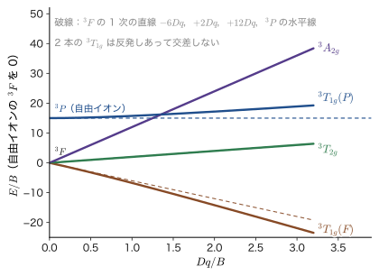
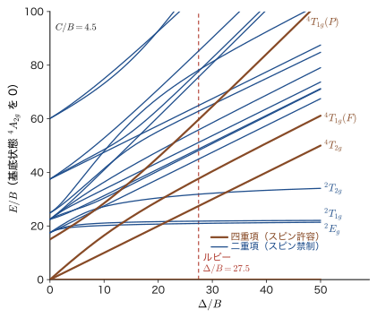
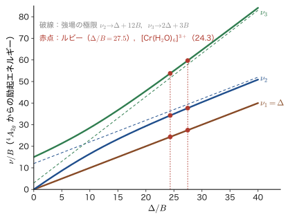
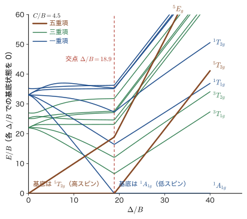

第47章多電子項と田辺–菅野図 — Racah パラメータと多重項の分裂
1 電子の描像は，d 電子の吸収が 1 本だけ現れると予言する．これは本当だろうか．第44章で私たちは，八面体に並んだ配位子の静電場の中で 3d 軌道が 3 重の $t_{2g}$ と 2 重の $e_g$ に分かれ，その間隔が $\Delta_{\mathrm o}=10Dq$ であることを導いた．もし $\mathrm{Cr^{3+}}$ の 3 個の 3d 電子が互いに無関係に動いているなら，電子は下の $t_{2g}$ から上の $e_g$ へ 1 個だけ飛び移ることができ，吸収スペクトルには $\Delta_{\mathrm o}$ に対応する1 本の帯が現れるはずである．ところが実際のルビー（$\mathrm{Al_2O_3}$ の $\mathrm{Al^{3+}}$ を少量の $\mathrm{Cr^{3+}}$ で置き換えた赤い宝石）には，緑の光（黄緑に近い．波長約 555 nm）と青紫の光（約 405 nm）の2 本の広い吸収帯があり，さらに，吸収の強さは小さいが鋭い赤い発光線（694.3 nm）がある．3 個の電子は独立ではない．電子どうしは Coulomb 反発で押し合っており，その反発の大きさは，配位子場が 3d 準位を分ける大きさ（$10^4\ \mathrm{cm^{-1}}$ 程度）と同程度なのである．
この章では，電子間反発と配位子場が同程度に効くときの $d^n$ 配置のエネルギー準位を，量子力学の道具（縮退のある摂動論，行列の対角化，対称性）だけで解く．まず $d^2$ の 45 状態を 2 通りの方法で数えて，1 電子の描像では足りないことを確かめる．次に，自由イオンの項（${}^3\mathrm{F}$，${}^3\mathrm{P}$，…）のエネルギーを 3 つの定数 $A,B,C$（Racah パラメータ．第34章 34.5で導入した）で表し，それが八面体の場の中でどう分裂するかを，配位子場が弱い極限と強い極限の両方から調べる．両極限をなめらかにつないだ図が田辺–菅野図（Tanabe–Sugano diagram）で，横軸を $\Delta_{\mathrm o}/B$，縦軸を $E/B$ にとると，ルビーのスペクトルも，$\mathrm{Fe^{2+}}$ が高スピンか低スピンかも，1 枚の図から読み取れる．古典物理には対応物のない，量子力学に固有の現象——スピン・軌道・対称性が絡み合った多電子状態の系統的な整理——である．
- $d^2$ の 45 状態（$(t_{2g})^2$ が 15，$t_{2g}e_g$ が 24，$(e_g)^2$ が 6）と，自由イオンの項の数え上げ（${}^3\mathrm{F}$ が 21，${}^3\mathrm{P}$ が 9，${}^1\mathrm{G}$ が 9，${}^1\mathrm{D}$ が 5，${}^1\mathrm{S}$ が 1）が同じ 45 になること．第34章の Slater の箱で得た $d^2$ と $d^3$（120 状態，8 個の項）の項と，Hund の基底項
- Racah パラメータ $A=F_0-49F_4$，$B=F_2-5F_4$，$C=35F_4$ と $d^2$ の項エネルギー（${}^3\mathrm{F}$：$A-8B$，${}^3\mathrm{P}$：$A+7B$，${}^1\mathrm{G}$：$A+4B+2C$，${}^1\mathrm{D}$：$A-3B+2C$，${}^1\mathrm{S}$：$A+14B+7C$）の意味
- 弱い配位子場での項の分裂（$\mathrm{S}\to A_{1g}$，…，$\mathrm{F}\to A_{2g}+T_{1g}+T_{2g}$）を指標の公式で求めること，F 項の 1 次エネルギー（$d^3$ で ${}^4A_{2g}:-12Dq$，${}^4T_{2g}:-2Dq$，${}^4T_{1g}:+6Dq$．$d^2$ では符号が逆），強い配位子場での $(t_{2g})^2={}^3T_{1g}+{}^1A_{1g}+{}^1E_g+{}^1T_{2g}$ とそのエネルギー $A-5B$，$A+B+2C$，$A+10B+5C$，両極限をつなぐ相関図
- 田辺–菅野図の約束と作り方．$d^3$ の $2\times2$ 行列 $\begin{pmatrix}-15B+6Dq&4Dq\\4Dq&0\end{pmatrix}$ から $\nu_1=\Delta_{\mathrm o}$，$\nu_{2,3}=\tfrac12\bigl[15B+3\Delta_{\mathrm o}\mp\sqrt{225B^2-18B\Delta_{\mathrm o}+\Delta_{\mathrm o}^2}\bigr]$ を導き，ルビーの吸収帯から $B=655\ \mathrm{cm^{-1}}$ を求めること（$\nu_k$ は $\mathrm{cm^{-1}}$ で測った波数．47.1.1 節の囲み）
- $d^4$〜$d^7$ の高スピン・低スピンの交点（$C/B=4.5$ で $\Delta_{\mathrm o}/B=26.8,\,28.4,\,18.9,\,21.2$）の意味と，線幅（鋭い線と広い帯）の読み方
- 電子雲拡大効果 $\beta=B/B_0$ と共有結合性，スピン軌道相互作用と Kramers 縮退，ルビーの $R_1$，$R_2$ 線（差 $29\ \mathrm{cm^{-1}}$）
もとにしたノート：本章はノートにない内容を補った章である．関連するノート：望月泰英『物理学ノート 量子力学3』 pp. 50–55，pp. 65–68．
47.1 1 電子の描像では足りない — $d^2$ の 45 状態
47.1.1 1 電子の描像は何を予言し，実験は何を示すか
第44章で得た結果を，もう一度，多電子の言葉で言い直そう．金属イオンの 3d 殻には $5$ 個の軌道があり，電子はそれぞれ上向きか下向きのスピンをもつから，スピン軌道（軌道とスピンの組）は全部で $10$ 個ある．八面体の配位子場の中では，5 個の軌道が 3 個の $t_{2g}$ と 2 個の $e_g$ に分かれるので，10 個のスピン軌道は，下の $6$ 個（$t_{2g}$ の 3 軌道 $\times$ 2 スピン）と上の $4$ 個（$e_g$ の 2 軌道 $\times$ 2 スピン）になる．$\mathrm{Cr^{3+}}$ は $d^3$ なので，電子間の反発を無視するならば，基底状態は 3 個の電子が $t_{2g}$ の 3 軌道に 1 個ずつスピンをそろえて入った配置 $(t_{2g})^3$ で，電子を 1 個 $e_g$ へ上げた配置 $(t_{2g})^2(e_g)$ はちょうど $\Delta=10Dq$ だけ高い．吸収は $\Delta$ の位置に 1 本だけ現れるはずである．
ところが実験（ルビーや，緑色のエメラルド，紫色の $\mathrm{[Cr(H_2O)_6]^{3+}}$ の水溶液など，多くの $\mathrm{Cr^{3+}}$ 化合物）は，スピン許容の遷移にあたる広い吸収帯を可視域に 2 本示し（あとで見るように理論は 3 本を予想するが，3 本目は紫外にあって，配位子から金属への電荷移動の強い吸収に重なりやすく，観測されないことも多い），そのほかに，それより弱い鋭い線をいくつも示す．スピン許容の帯が 2 本以上あること自体が，1 電子の描像では説明できない．説明の鍵は，配置 $(t_{2g})^2(e_g)$ が，実は1 つのエネルギー準位ではないことにある．この配置には $\binom{6}{2}\times4=60$ 個の状態があり，その中で 2 個の $t_{2g}$ 電子が互いに反発し，さらに $e_g$ の 1 電子とも反発する．反発の大きさは，電子の配置（どの軌道にどのスピンで入っているか）で変わるので，60 個の状態は何本かの準位に分かれる．スピンが 3 個そろった状態（四重項）だけに限っても，この配置からは 2 つの準位（${}^4T_{2g}$ と ${}^4T_{1g}$）が生じる．さらに配置 $t_{2g}(e_g)^2$ から，3 つ目の四重項が生じる．これが，スピン許容の 3 本の吸収帯（可視域の 2 本と紫外の 3 本目）の正体である（47.4 節で式を導く）．
記法：エネルギーを波数で表す
分光学では，光子のエネルギー $E$ を $hc$ で割った波数（wavenumber）$\tilde\nu=E/(hc)$ を単位 $\mathrm{cm^{-1}}$ で測って，エネルギーの代わりに用いる（$1\ \mathrm{eV}=8065.54\ \mathrm{cm^{-1}}$，$1\ \mathrm{cm^{-1}}=0.123\,98\ \mathrm{meV}$．波長とは $\lambda\,[\mathrm{nm}]=10^7/\tilde\nu\,[\mathrm{cm^{-1}}]$ の関係にある）．本章でも，$\Delta$，$B$，$C$，$Dq$ はすべて $\mathrm{cm^{-1}}$ で表す．基底状態から励起状態への遷移エネルギー（吸収帯の位置）も同じ単位で測り，本来は $\tilde\nu_1,\tilde\nu_2,\tilde\nu_3$ と書くべきところを，式が込み入るので，本章では $\nu_1,\nu_2,\nu_3$ と略記し，$\tilde\nu$ も単に $\nu$ と書く．したがって本章で $\mathrm{cm^{-1}}$ の単位をもつ $\nu$ は，振動数 $\nu\,[\mathrm{Hz}]$（$E=h\nu$）ではなく，波数である（$\nu\,[\mathrm{cm^{-1}}]=\nu\,[\mathrm{Hz}]/c$．$c$ は $\mathrm{cm/s}$ で測る）．
吸収の強さにも，スピンが関わる．光の吸収を起こす電気双極子の演算子 $\hat{\bm d}=-e_0\hat{\bm r}$ は電子の位置だけに作用し，スピンには作用しない．そのため，始状態と終状態で全スピンが変わらない遷移（$\Delta S=0$．たとえば ${}^4A_{2g}\to{}^4T_{2g}$）はスピン許容（spin-allowed）で強く，変わる遷移（${}^4A_{2g}\to{}^2E_g$）はスピン禁制（spin-forbidden）で桁違いに弱い（詳しくは第48章 48.2）．ルビーの広い 2 本の帯がスピン許容の遷移，鋭い赤い線がスピン禁制の遷移 ${}^2E_g\leftrightarrow{}^4A_{2g}$ である．
47.1.2 $d^2$ の状態を数える
多電子の準位を整理するには，まず状態の数を正確に数えておく必要がある．数えた結果が，後で固有値を求めたときの縮重度の総和と一致しなければ，どこかが間違っている．最も簡単な $d^2$ で数えよう．
Pauli の排他原理により，2 個の電子が同じスピン軌道に入ることはできない．10 個のスピン軌道から 2 個を選ぶ選び方は $\dbinom{10}{2}=\dfrac{10\cdot9}{2}=45$ 通りである．次に，八面体の場で 10 個を $t_{2g}$ の 6 個と $e_g$ の 4 個に分けて，どちらから何個選ぶかで分類する：
| 配置 | 選び方 | 状態数 |
|---|---|---|
| $(t_{2g})^2$ | $t_{2g}$ の 6 個から 2 個：$\dbinom62$ | $15$ |
| $t_{2g}\,e_g$ | $t_{2g}$ の 6 個から 1 個，$e_g$ の 4 個から 1 個：$6\times4$ | $24$ |
| $(e_g)^2$ | $e_g$ の 4 個から 2 個：$\dbinom42$ | $6$ |
| 合計 | $45$ | |
定義47.1 多重項（multiplet）
同じ 1 電子配置から生じる状態の集まりが，電子間反発によって分かれたエネルギー準位の組を多重項という．自由イオンでは，全軌道角運動量 $L$ と全スピン $S$ で指定される項（${}^{2S+1}\mathrm{L}$，第34章 34.2）が 1 つの準位で，縮重度は $(2L+1)(2S+1)$ である．八面体の場の中では，$L$ が既約表現 $A_{1g},A_{2g},E_g,T_{1g},T_{2g}$ に置き換わり，${}^{2S+1}T_{1g}$ のように書く．縮重度はスピンの $2S+1$ と，既約表現の次元（$A$ は 1，$E$ は 2，$T$ は 3）の積である．
例題47.1 $d^3$ の状態を数える
(1) $d^3$ 配置の状態数を求め，八面体の場の配置 $(t_{2g})^3$，$(t_{2g})^2e_g$，$t_{2g}(e_g)^2$，$(e_g)^3$ に分類せよ．(2) $(t_{2g})^3$ のうち，3 個のスピンがすべて上向きの状態は何個か．その状態の名前（項）を答えよ．
解答 (1) 10 個のスピン軌道から 3 個を選ぶので $\dbinom{10}{3}=\dfrac{10\cdot9\cdot8}{3\cdot2\cdot1}=120$ 通り．配置別には，$(t_{2g})^3$：$\dbinom63=20$，$(t_{2g})^2e_g$：$\dbinom62\times4=15\times4=60$，$t_{2g}(e_g)^2$：$6\times\dbinom42=6\times6=36$，$(e_g)^3$：$\dbinom43=4$．合計 $20+60+36+4=120$ で，一致する．
(2) 3 個のスピンがすべて上向きなら，3 個の電子は $t_{2g}$ の 3 個の軌道（$d_{xy},d_{yz},d_{zx}$）に 1 個ずつ入るしかない（同じ軌道にスピンが平行な 2 電子は入れない）．したがって状態は $\dbinom33=1$ 個である．この状態は全スピン $S=\tfrac32$ の $M_S=\tfrac32$ の成分で，同じ準位には $M_S=\tfrac12,-\tfrac12,-\tfrac32$ の 3 個（$(t_{2g})^3$ で，上向きと下向きが混ざった状態）も属し，スピン四重項を作る．スピンがそろった 3 電子の軌道部分は，$t_{2g}$ の 3 軌道に 1 個ずつ入る 1 つの行列式で，電子の交換について完全反対称である．したがって軌道の部分は 1 次元の表現で，$d_{xy},d_{yz},d_{zx}$ の $3\times3$ の表現行列の行列式がもつ符号（$C_3$ と $C_2$ で $+1$，$C_4$ と $C_2'$ で $-1$）で変換する．これは指標表（表47.3）の $A_2$ にあたる．よって項は ${}^4A_{2g}$（縮重度 $4\times1=4$）である．これが，47.3 節でみる $d^3$ の基底状態である．
47.1.3 2 つの極限 — 電子間反発が先か，配位子場が先か
表47.1 の分類は，「配位子場が電子間反発よりはるかに強い」と考えたときの分類である．この極限（強場）では，まず 1 電子のエネルギー（$t_{2g}$：$-4Dq$，$e_g$：$+6Dq$）で配置を決め，各配置の中の縮退を，電子間反発が解く．$d^2$ の 3 つの配置の 0 次のエネルギーは $2\times(-4Dq)=-8Dq$，$(-4+6)Dq=+2Dq$，$2\times6Dq=+12Dq$ で，間隔は $10Dq=\Delta$ である．
逆に，「電子間反発が配位子場よりはるかに強い」と考えることもできる．この極限（弱場）では，まず電子間反発が 45 状態を，自由イオンの項（第34章）に分ける：${}^3\mathrm{F}$（21 状態），${}^3\mathrm{P}$（9），${}^1\mathrm{G}$（9），${}^1\mathrm{D}$（5），${}^1\mathrm{S}$（1）．合計 $21+9+9+5+1=45$ で，同じ 45 個が別の仕方で分類された．次に，配位子場がそれぞれの項を，$O_h$ の既約表現に分ける．どちらの極限でも，最終的には同じ 45 個の状態のエネルギーを問題にしているのである．
イメージ：Zeeman 効果と Paschen–Back 効果の関係に似ている
2 つの効果が同程度に効くとき，大きい方を先に考えて小さい方を摂動にする，という戦略は，すでに第26章 26.5 節で使った．スピン軌道相互作用が磁場の効果より強い極限（弱い磁場）では，原子は $J$ で分類されて異常 Zeeman 効果を示し，磁場がスピン軌道相互作用より強い極限（強い磁場）では，$L$ と $S$ が別々に磁場のまわりを回って Paschen–Back 効果になる．配位子場の場合は，「スピン軌道相互作用」が電子間反発に，「磁場」が配位子場に対応する．中間の強さを扱うには，どちらの極限でもない行列の対角化が必要になる．それを 1 枚の図にまとめたものが，47.4 節の田辺–菅野図である．
応用：遷移金属錯体の $\Delta/B$ はどの範囲か
3d 遷移金属の八面体錯体では，$\Delta$ は $10\,000$〜$30\,000\ \mathrm{cm^{-1}}$ 程度（可視〜近紫外の光のエネルギー，$1\ \mathrm{eV}=8065.5\ \mathrm{cm^{-1}}$），電子間反発の大きさを表す Racah の $B$ は $500$〜$1000\ \mathrm{cm^{-1}}$ 程度（47.2 節）である．比 $\Delta/B$ は $10$〜$40$ で，「電子間反発が先」とも「配位子場が先」とも言い切れない中間の領域にある．これが，弱場でも強場でもない正確な対角化が必要な理由であり，第VIII部の配位子場理論の実用的な主題である．
この章の流れをまとめておこう．(1) 自由イオンの $d^n$ から，電子間反発で分かれる項 ${}^{2S+1}\mathrm{L}$ をつくり，そのエネルギーを Racah パラメータ $A,B,C$ で書く（47.2 節）．(2) 八面体の配位子場で，各項がどの既約表現に分かれ，どんなエネルギーをもつかを，弱場（電子間反発が先）と強場（配位子場が先）の 2 つの極限から調べ，相関図でつなぐ（47.3 節）．(3) 2 つの極限の間を行列の対角化で埋めたものが田辺–菅野図で，吸収帯の位置から $\Delta$ と $B$ が読み取れ，$d^n$ ごとの基底状態（高スピンか低スピンか）も決まる（47.4 節）．(4) こうして得た $B$ を自由イオンの値と比べると共有結合性がわかり（47.5 節），さらにスピン軌道相互作用を入れると，ルビーの鋭い赤い線の微細構造が説明できる（47.6 節）．
47.2 自由イオンの項と Racah パラメータ
弱場の出発点は，自由イオン（配位子のない，孤立した $d^n$ イオン）の項である．その導出と Racah パラメータの定義は第34章で与えた．ここでは，この章で何度も使う結果を，配位子場理論の側から読み直して整理する．まず $d^2$ と $d^3$ の項（Slater の箱の結果）を確認する．
47.2.1 $d^2$ と $d^3$ の項 — 第34章の結果
$d^n$ 配置の微視的状態を $(M_L,M_S)$ ごとに数えて項を取り出す手順（Slater の箱，$M_L$–$M_S$ 表）は，第34章で $d^2$ について（34.3.4），$d^3$ と $d^5$ について（34.3.5）実行した．本章ではその結果だけを使う．$d^2$ の 45 状態は 5 個の項に分かれ，
\begin{equation} d^2:\quad 45={}^3\mathrm{F}\,(21)+{}^3\mathrm{P}\,(9)+{}^1\mathrm{G}\,(9)+{}^1\mathrm{D}\,(5)+{}^1\mathrm{S}\,(1) \label{eq:47-d2terms} \end{equation}$d^3$ の 120 状態は 8 個の項（${}^2\mathrm{D}$ が 2 回現れる）に分かれる：
\begin{equation} d^3:\quad 120={}^4\mathrm{F}\,(28)+{}^4\mathrm{P}\,(12)+{}^2\mathrm{H}\,(22)+{}^2\mathrm{G}\,(18)+{}^2\mathrm{F}\,(14)+2\times{}^2\mathrm{D}\,(10)+{}^2\mathrm{P}\,(6) \label{eq:47-d3terms} \end{equation}括弧の中は縮重度 $(2L+1)(2S+1)$ である．等価な 2 電子（同じ副殻の 2 電子）の項で $L+S$ が偶数になる（${}^3\mathrm{F}$：$3+1$，${}^1\mathrm{G}$：$4+0$，…）のは，2 電子の交換で軌道部分が $(-1)^L$，スピン部分が $(-1)^{S+1}$ だけ符号を変え，その積が反対称（$-1$）でなければならないからである．図47.2 は，両方の $M_L$–$M_S$ 表を 1 枚にまとめたものである．マスの数字を左から右へ読み，色のついた四角を 1 つずつ数え上げると，式 \eqref{eq:47-d2terms}，\eqref{eq:47-d3terms} が再現される．
例題47.2 $d^3$ の項の状態数の総和
$d^3$ の項 ${}^4\mathrm{F}$，${}^4\mathrm{P}$，${}^2\mathrm{H}$，${}^2\mathrm{G}$，${}^2\mathrm{F}$，${}^2\mathrm{D}$（2 個），${}^2\mathrm{P}$ の状態数 $(2L+1)(2S+1)$ を求め，合計が 120 になることを確かめよ．また，$M_S=\tfrac12$ の行の合計 50 と，$M_S=\tfrac32$ の行の合計 10 を，これらの項から再現せよ．
解答 ${}^4\mathrm{F}$：$7\times4=28$，${}^4\mathrm{P}$：$3\times4=12$，${}^2\mathrm{H}$：$11\times2=22$，${}^2\mathrm{G}$：$9\times2=18$，${}^2\mathrm{F}$：$7\times2=14$，${}^2\mathrm{D}$：$5\times2=10$（2 個で 20），${}^2\mathrm{P}$：$3\times2=6$．合計は $28+12+22+18+14+20+6=120=\dbinom{10}{3}$．$M_S=\tfrac32$ の状態は四重項だけが含み，${}^4\mathrm{F}$ の 7 個と ${}^4\mathrm{P}$ の 3 個の合計 $10$ で，$\dbinom53=10$ と一致する．$M_S=\tfrac12$ の状態は，四重項の $7+3=10$ 個と，二重項 ${}^2\mathrm{H}$（11），${}^2\mathrm{G}$（9），${}^2\mathrm{F}$（7），${}^2\mathrm{D}$（$5\times2$），${}^2\mathrm{P}$（3）の $11+9+7+10+3=40$ 個の合計で $50=\dbinom52\times5$ と一致する．
47.2.2 Hund の規則と基底項
最もエネルギーの低い項（基底項）は，Hund の規則（第34章 34.6）で決まる：(1) 全スピン $S$ が最大の項が最も低い．(2) $S$ が同じなら，$L$ が最大の項が最も低い．これを $d^n$ に適用した結果が表47.2 である．たとえば $d^3$ は，項 ${}^4\mathrm{F}$，${}^4\mathrm{P}$ のうち $S=\tfrac32$ が最大で，その中で $L$ の大きい ${}^4\mathrm{F}$ が基底項になる．$d^n$ と $d^{10-n}$ は，電子とホールの関係（第34章 34.3.6）で，同じ項をもつ．
| 配置 | 基底項 | $S$ | $L$ | 例 |
|---|---|---|---|---|
| $d^1$ | ${}^2\mathrm{D}$ | $\tfrac12$ | 2 | $\mathrm{Ti^{3+}}$ |
| $d^2$ | ${}^3\mathrm{F}$ | 1 | 3 | $\mathrm{V^{3+}}$ |
| $d^3$ | ${}^4\mathrm{F}$ | $\tfrac32$ | 3 | $\mathrm{Cr^{3+}}$，$\mathrm{V^{2+}}$ |
| $d^4$ | ${}^5\mathrm{D}$ | 2 | 2 | $\mathrm{Cr^{2+}}$，$\mathrm{Mn^{3+}}$ |
| $d^5$ | ${}^6\mathrm{S}$ | $\tfrac52$ | 0 | $\mathrm{Mn^{2+}}$，$\mathrm{Fe^{3+}}$ |
| $d^6$ | ${}^5\mathrm{D}$ | 2 | 2 | $\mathrm{Fe^{2+}}$，$\mathrm{Co^{3+}}$ |
| $d^7$ | ${}^4\mathrm{F}$ | $\tfrac32$ | 3 | $\mathrm{Co^{2+}}$ |
| $d^8$ | ${}^3\mathrm{F}$ | 1 | 3 | $\mathrm{Ni^{2+}}$ |
| $d^9$ | ${}^2\mathrm{D}$ | $\tfrac12$ | 2 | $\mathrm{Cu^{2+}}$ |
| $d^{10}$ | ${}^1\mathrm{S}$ | 0 | 0 | $\mathrm{Zn^{2+}}$ |
基底項が ${}^{2S+1}\mathrm{F}$（$d^2$，$d^3$，$d^7$，$d^8$）のイオンでは，基底項と同じ $S$ の項 ${}^{2S+1}\mathrm{P}$ が $15B$ だけ上にあり，配位子場はこの同じスピンの 2 つの項を混ぜる（$S$ が違う項とは混ざらない．47.3.2 節）．これが，$d^2$，$d^3$，$d^7$，$d^8$ で田辺–菅野図が特に簡単な $2\times2$ の行列の問題になる理由である．基底項が ${}^5\mathrm{D}$（$d^4$，$d^6$）や ${}^6\mathrm{S}$（$d^5$）のイオンは，同じ $S$ の項が 1 つだけなので，この混合はない．
47.2.3 電子間反発のエネルギー — Racah パラメータ $A$，$B$，$C$
項のエネルギーは $1/r_{12}$ の行列要素で決まり，Slater 積分 $F^k$（$k=0,2,4$）の整数係数の線形結合になる（第34章 34.5．$F_2=F^2/49$，$F_4=F^4/441$ は Condon–Shortley の規格化）．第34章 定義34.5 の Racah パラメータ
\begin{equation} A=F_0-49F_4,\qquad B=F_2-5F_4,\qquad C=35F_4 \label{eq:47-racah} \end{equation}（$F_4=C/35$，$F_2=B+C/7$，$F_0=A+\tfrac75C$）を使うと，$d^2$ の 5 つの項のエネルギーは次のとおりである（第34章 表34.6 と同じ結果）．
公式47.1 $d^2$ の項エネルギー
\begin{equation} \begin{aligned} E({}^3\mathrm{F})&=A-8B, & E({}^3\mathrm{P})&=A+7B,\\ E({}^1\mathrm{G})&=A+4B+2C, & E({}^1\mathrm{D})&=A-3B+2C,\\ E({}^1\mathrm{S})&=A+14B+7C && \end{aligned} \label{eq:47-d2energy} \end{equation}Hund の規則により ${}^3\mathrm{F}$ が最も低い．${}^3\mathrm{F}$ を基準にした励起エネルギーは，${}^3\mathrm{P}$：$15B$，${}^1\mathrm{D}$：$5B+2C$，${}^1\mathrm{G}$：$12B+2C$，${}^1\mathrm{S}$：$22B+7C$ である．
この結果を，第34章とは別の，直接的な方法で確かめよう．5 つの項はどれも $M_L=0$，$M_S=0$ の状態を 1 個ずつ含むから，この $(M_L,M_S)=(0,0)$ の部分空間（5 次元）でエネルギー行列を作って対角化すれば，5 つの項のエネルギーが一度に出る．
導出：$(M_L,M_S)=(0,0)$ の $5\times5$ 行列の対角化
基底として，上向きスピンが軌道 $m$，下向きスピンが軌道 $-m$ にある行列式 $\ket{m\!\uparrow,-m\!\downarrow}$（$m=2,1,0,-1,-2$）をとる．$1/r_{12}$ の行列要素を Gaunt の係数から作ると（値は球面調和関数の積分だけで決まる整数の組み合わせ），エネルギー行列は $A\,I+B\,M_B+C\,M_C$ の形になる（$I$ は単位行列，行と列は $m=2,1,0,-1,-2$ の順）：
$$ M_B=\begin{pmatrix}4&-6&4&0&0\\-6&1&-1&6&0\\4&-1&4&-1&4\\0&6&-1&1&-6\\0&0&4&-6&4\end{pmatrix},\qquad M_C=\begin{pmatrix}2&-1&1&-1&2\\-1&2&-1&2&-1\\1&-1&3&-1&1\\-1&2&-1&2&-1\\2&-1&1&-1&2\end{pmatrix} $$行列要素の計算例を 2 つ示す．対角要素 $\mel{m\!\uparrow,-m\!\downarrow}{1/r_{12}}{m\!\uparrow,-m\!\downarrow}$ は，スピンが逆向きなので交換の項がなく，Coulomb 積分だけで，$\sum_kc^k(2,m)\,c^k(2,-m)\,F^k$（$k=0,2,4$）と書ける．ここで $c^k(2,m)=\sqrt{4\pi/(2k+1)}\int Y_2^{m*}Y_k^0Y_2^m\,\dd\Omega$ は Gaunt の係数から決まる角度部分の数で，$F^k=D_kF_k$（$D_0=1$，$D_2=49$，$D_4=441$）である．$d$ 軌道では $c^0=1$，$c^2(2,\pm2)=-\tfrac27$，$c^4(2,\pm2)=\tfrac1{21}$，$c^2(2,0)=c^4(2,0)=\tfrac27$ なので
$$ \begin{aligned} \ket{2\!\uparrow,-2\!\downarrow}&:\ F_0+\Bigl(-\tfrac27\Bigr)^2 49F_2+\Bigl(\tfrac1{21}\Bigr)^2 441F_4=F_0+4F_2+F_4,\\ \ket{0\!\uparrow,0\!\downarrow}&:\ F_0+\Bigl(\tfrac27\Bigr)^2 49F_2+\Bigl(\tfrac27\Bigr)^2 441F_4=F_0+4F_2+36F_4 \end{aligned} $$となる．逆関係 $F_4=C/35$，$F_2=B+C/7$，$F_0=A+\tfrac75C$ を代入すると，前者は $A+4B+2C$，後者は $A+4B+3C$ になる．これは，$M_B$ の対角要素 $4$，$4$ と，$M_C$ の対角要素 $2$，$3$（$m=2$ と $m=0$ の位置）に，それぞれ一致する．非対角要素も，同様に（交換型の Gaunt の積分から）計算できる．
この行列は $m\to-m$ の入れ替えで不変なので，偶の組み合わせ $e_2=(\ket{2}+\ket{-2})/\sqrt2$，$e_1=(\ket{1}+\ket{-1})/\sqrt2$，$e_0=\ket{0}$ と，奇の組み合わせ $o_2=(\ket{2}-\ket{-2})/\sqrt2$，$o_1=(\ket{1}-\ket{-1})/\sqrt2$ に分かれ，$3\times3$ と $2\times2$ の 2 つのブロックになる（以下 $A$ を省く）．奇のブロックは
$$ \begin{pmatrix}4B&-6B\\-6B&-5B\end{pmatrix} $$で，固有値は $\lambda=\tfrac12(-B)\pm\sqrt{(\tfrac92B)^2+(6B)^2}=-\tfrac12B\pm\tfrac{15}2B$，すなわち $\lambda=7B$ と $-8B$ である．これが ${}^3\mathrm{P}$ と ${}^3\mathrm{F}$（$A+7B$，$A-8B$）である．偶のブロックは，基底 $(e_2,e_1,e_0)$ で
$$ \begin{pmatrix}4B+4C&-6B-2C&\sqrt2\,(4B+C)\\-6B-2C&7B+4C&-\sqrt2\,(B+C)\\\sqrt2\,(4B+C)&-\sqrt2\,(B+C)&4B+3C\end{pmatrix} $$で，特性多項式は $(\lambda-4B-2C)(\lambda+3B-2C)(\lambda-14B-7C)$ に因数分解される．固有値は $4B+2C$，$-3B+2C$，$14B+7C$ で，${}^1\mathrm{G}$，${}^1\mathrm{D}$，${}^1\mathrm{S}$ のエネルギー（$A$ を加えて）に一致する．対角和（トレース）も，行列 $5A+14B+11C$ と項エネルギーの和 $5A+(-8+7+4-3+14)B+(2+2+7)C=5A+14B+11C$ で一致する．
（導出終わり）
$d^3$ の項のエネルギーも同じ方法で得られる（第34章の式）：${}^4\mathrm{F}$：$3A-15B$，${}^4\mathrm{P}$：$3A$，${}^2\mathrm{G}$：$3A-11B+3C$，${}^2\mathrm{H}$ と ${}^2\mathrm{P}$：$3A-6B+3C$，${}^2\mathrm{F}$：$3A+9B+3C$，2 つの ${}^2\mathrm{D}$：$3A+5B+5C\pm\sqrt{193B^2+8BC+4C^2}$．${}^4\mathrm{F}$ と ${}^4\mathrm{P}$ の差が $15B$ で $C$ を含まないこと，${}^2\mathrm{D}$ の 2 つが互いに混ざって平方根が現れることに注意する．$d^8$ は $d^2$ の，$d^7$ は $d^3$ のホールで，項と項の間隔は同じである（ただし $A$ の係数は電子間の対の数 $N(N-1)/2$ で変わる）．
イメージ：$B$ と $C$ の意味
$A$ は，球対称な平均の反発（$F_0$）が主で，配置の中のすべての項に同じ量だけ加わる定数（$A$ の係数は電子の対の数 $N(N-1)/2$）なので，項の間隔には効かない．項の間隔を決めるのは，球対称でない部分の反発（$F_2$，$F_4$）の組み合わせ $B=F_2-5F_4$ と $C=35F_4$ である．式 \eqref{eq:47-d2energy} を見ると，${}^3\mathrm{F}$ と ${}^3\mathrm{P}$（同じスピン三重項）の間隔は $15B$ だけで $C$ を含まない．同じスピン多重度の項の間隔は，$B$ が決める．一方，スピンの向きが違う項（${}^3\mathrm{F}$ から ${}^1\mathrm{D}$，${}^1\mathrm{G}$ へ）の間隔には $2C$ が入る．$C$ は，スピン一重項と三重項の間隔に効く量である．$B$ も $C$ も，$d$ 電子の電荷分布が球対称からずれていることによる反発の差を表す．
応用：自由イオンの $B$ と $C/B$，そしてスピン軌道相互作用
3d 遷移金属の自由イオンの $B$ は，$\mathrm{V^{3+}}$ で約 $860\ \mathrm{cm^{-1}}$，$\mathrm{Cr^{3+}}$ で約 $920\ \mathrm{cm^{-1}}$，$\mathrm{Mn^{2+}}$ で約 $960\ \mathrm{cm^{-1}}$，$\mathrm{Ni^{2+}}$ で約 $1040\ \mathrm{cm^{-1}}$ と，周期表の右に行くほど，また電荷が大きいほど大きくなる（分光データの値．$1\ \mathrm{eV}=8065.5\ \mathrm{cm^{-1}}$ なので $B\approx0.1$ eV）．比 $C/B$ は 3.5〜4.5 程度で，「$C\approx4B$」が経験則として使われる（第34章 例題34.13 で，水素様の 3d 軌道でも $C/B\approx4$ になることを示した）．スピン軌道相互作用（第26章，第34章 34.4）の 1 電子の結合定数 $\zeta_{3d}$ は $100$〜$800\ \mathrm{cm^{-1}}$ 程度（$\mathrm{Cr^{3+}}$ で約 $270\ \mathrm{cm^{-1}}$）で，項の間隔 $15B\approx10^4\ \mathrm{cm^{-1}}$ や $\Delta$ に比べて 1 桁以上小さい（$B$ との比は $\mathrm{Cr^{3+}}$ で約 0.3，$\mathrm{Ni^{2+}}$ で約 0.6 で，周期表の右の 3d イオンでは無視できなくなってくる）．したがって，$\mathrm{Cr^{3+}}$ のような前半の 3d イオンで項の位置を考える間は，スピン軌道相互作用による微細構造 ${}^{2S+1}\mathrm{L}_J$ は無視できる．スピン軌道相互作用が本質的になるのは，ルビーの鋭い $R$ 線の細かい構造を論じる 47.6 節である．
例題47.3 $\mathrm{V^{3+}}$（$d^2$）の自由イオンの励起エネルギー
$\mathrm{V^{3+}}$ の自由イオンで $B=860\ \mathrm{cm^{-1}}$，$C=4B$ とする．基底項 ${}^3\mathrm{F}$ から ${}^3\mathrm{P}$，${}^1\mathrm{D}$，${}^1\mathrm{G}$，${}^1\mathrm{S}$ への励起エネルギーを $\mathrm{cm^{-1}}$ と eV，および光の波長で求めよ．（$1\ \mathrm{eV}=8065.54\ \mathrm{cm^{-1}}$，波長 $\lambda\,[\mathrm{nm}]=10^7/\nu\,[\mathrm{cm^{-1}}]$．この値は仮定値であり，実測値ではない．）
解答 $C=4B=3440\ \mathrm{cm^{-1}}$．式 \eqref{eq:47-d2energy} より，${}^3\mathrm{P}$：$(A+7B)-(A-8B)=15B=12\,900\ \mathrm{cm^{-1}}$，${}^1\mathrm{D}$：$(A-3B+2C)-(A-8B)=5B+2C=13B=11\,180\ \mathrm{cm^{-1}}$，${}^1\mathrm{G}$：$(A+4B+2C)-(A-8B)=12B+2C=20B=17\,200\ \mathrm{cm^{-1}}$，${}^1\mathrm{S}$：$(A+14B+7C)-(A-8B)=22B+7C=50B=43\,000\ \mathrm{cm^{-1}}$．eV に直すと $12\,900/8065.54=1.599$，$11\,180/8065.54=1.386$，$17\,200/8065.54=2.133$，$43\,000/8065.54=5.331\ \mathrm{eV}$．波長は $775\ \mathrm{nm}$，$894\ \mathrm{nm}$，$581\ \mathrm{nm}$，$233\ \mathrm{nm}$．最も低い励起は ${}^1\mathrm{D}$ で，${}^3\mathrm{P}$ より低い（$C/B=4$ の場合．${}^1\mathrm{D}$ の $5B+2C$ と ${}^3\mathrm{P}$ の $15B$ が等しくなるのは $C/B=5$ で，$C/B\lt5$ なら ${}^1\mathrm{D}$ の方が低い．励起項の間では，スピンの大きい項が低いという Hund の規則は成り立つとは限らない）．$A$ は結果に現れなかった．
47.3 配位子場による項の分裂 — 弱場・強場・相関図
47.3.1 弱場：自由イオンの項が八面体の既約表現に分裂する
配位子場が電子間反発より弱い（$\Delta\ll B$）として，まず自由イオンの項をつくり，次に配位子場を摂動として加える．配位子場 $\hat{V}_{\mathrm{cf}}=\sum_i v_{\mathrm{cf}}(\bm{r}_i)$ は電子の位置だけの関数でスピンに作用しないので，スピン量子数 $S$ は保存し，項の ${}^{2S+1}$ の部分はそのまま残る．変わるのは軌道の部分である．自由イオンでは，1 つの項の $2L+1$ 個の軌道状態は，全角運動量 $L$ の回転対称性のために縮退していた．八面体の場では，回転対称性が八面体の回転群 $O$ の 24 個の回転（恒等，$C_3$ が 8 個，$C_2$ が 3 個，$C_4$ が 6 個，$C_2'$ が 6 個）だけに下がるので，$2L+1$ 重の縮退は，$O$ の既約表現 $A_1,A_2,E,T_1,T_2$ に分裂する．これを，第45章の群論（指標）の道具で実行する．
$d$ 電子の状態は偶（反転で符号を変えない）なので，$O_h$ の既約表現には添字 $g$ が付く．以下，$O$ の指標表と $O_h$ の $g$ の表現は同じものとして扱う．
数学の道具：回転の指標と簡約の公式
角運動量 $L$ の $2L+1$ 個の状態 $\ket{L,M}$ は，$z$ 軸まわりに角 $\alpha$ だけ回転すると位相 $e^{-iM\alpha}$ を受ける．したがって，回転の表現行列の対角和（指標）は
\begin{equation} \chi_L(\alpha)=\sum_{M=-L}^{L}e^{iM\alpha}=\frac{\sin\bigl[(2L+1)\alpha/2\bigr]}{\sin(\alpha/2)} \label{eq:47-chiL} \end{equation}である（等比数列の和．$\alpha=0$ では $2L+1$）．どの軸のまわりでも，回転角 $\alpha$ が同じなら指標は同じである．$O$ の類は，$C_3$：$\alpha=2\pi/3$，$C_2$ と $C_2'$：$\alpha=\pi$，$C_4$：$\alpha=\pi/2$ である．既約表現 $\Gamma$ が $L$ の中に含まれる回数は，簡約の公式（指標の直交関係）
\begin{equation} n_\Gamma=\frac{1}{24}\sum_{c}h_c\,\chi_L(c)\,\chi_\Gamma(c) \label{eq:47-reduce} \end{equation}で求まる（$h_c$ は類 $c$ の元の数，$24$ は群の位数）．（$\Gamma$ は既約表現を表す記号で，固体のバンド理論の波数空間の原点 $\Gamma$ 点とは別のものである．）群・指標・簡約の詳しい説明は第45章にある．
| $E$ | $8C_3$ | $3C_2$ | $6C_4$ | $6C_2'$ | |
|---|---|---|---|---|---|
| $A_1$ | 1 | 1 | 1 | 1 | 1 |
| $A_2$ | 1 | 1 | 1 | $-1$ | $-1$ |
| $E$ | 2 | $-1$ | 2 | 0 | 0 |
| $T_1$ | 3 | 0 | $-1$ | 1 | $-1$ |
| $T_2$ | 3 | 0 | $-1$ | $-1$ | 1 |
| $\chi_0$（S） | 1 | 1 | 1 | 1 | 1 |
| $\chi_1$（P） | 3 | 0 | $-1$ | 1 | $-1$ |
| $\chi_2$（D） | 5 | $-1$ | 1 | $-1$ | 1 |
| $\chi_3$（F） | 7 | 1 | $-1$ | $-1$ | $-1$ |
| $\chi_4$（G） | 9 | 0 | 1 | 1 | 1 |
| $\chi_5$（H） | 11 | $-1$ | $-1$ | 1 | $-1$ |
| $\chi_6$（I） | 13 | 1 | 1 | $-1$ | 1 |
たとえば $L=2$（D 項）では $\chi_2=(5,-1,1,-1,1)$ で，これは $E$ の指標 $(2,-1,2,0,0)$ と $T_2$ の指標 $(3,0,-1,-1,1)$ の和に等しい．すなわち D 項は $E+T_2$ に分裂する．$d$ 軌道が $e_g$ と $t_{2g}$ に分かれること（第44章）と同じ結果である．一般の $L$ について式 \eqref{eq:47-reduce} を計算した結果が表47.4 である．
| 項 | $L$ | 分裂 | 次元の和 |
|---|---|---|---|
| S | 0 | $A_1$ | 1 |
| P | 1 | $T_1$ | 3 |
| D | 2 | $E+T_2$ | $2+3=5$ |
| F | 3 | $A_2+T_1+T_2$ | $1+3+3=7$ |
| G | 4 | $A_1+E+T_1+T_2$ | $1+2+3+3=9$ |
| H | 5 | $E+2T_1+T_2$ | $2+6+3=11$ |
| I | 6 | $A_1+A_2+E+T_1+2T_2$ | $1+1+2+3+6=13$ |
例題47.4 指標の公式で F 項と G 項の分裂を求める
簡約の公式 \eqref{eq:47-reduce} を用いて，(1) F 項（$L=3$）に $A_2$，$T_1$，$E$ が含まれる回数，(2) G 項（$L=4$）に $A_1$，$E$，$T_2$ が含まれる回数を求めよ．
解答 $\chi_3=(7,1,-1,-1,-1)$，$h=(1,8,3,6,6)$．(1) $A_2$：$\frac1{24}[1\cdot7\cdot1+8\cdot1\cdot1+3\cdot(-1)\cdot1+6\cdot(-1)\cdot(-1)+6\cdot(-1)\cdot(-1)]=\frac{7+8-3+6+6}{24}=1$．$T_1$：$\chi_{T_1}=(3,0,-1,1,-1)$ より $\frac1{24}[21+0+3-6+6]=1$．$E$：$\chi_E=(2,-1,2,0,0)$ より $\frac1{24}[14-8-6+0+0]=0$．よって F は $A_2$ を 1 回，$T_1$ を 1 回含み，$E$ は含まない（$T_2$ は $\frac1{24}[21+0+3+6-6]=1$ 回）．合計 $1+3+3=7$．(2) $\chi_4=(9,0,1,1,1)$．$A_1$：$\frac1{24}[9+0+3+6+6]=1$．$E$：$\frac1{24}[18-0+6+0+0]=1$．$T_2$：$\chi_{T_2}=(3,0,-1,-1,1)$ より $\frac1{24}[27+0-3-6+6]=1$．（$T_1$：$\frac1{24}[27+0-3+6-6]=1$，$A_2$：$\frac1{24}[9+0+3-6-6]=0$．）したがって $\mathrm{G}\to A_1+E+T_1+T_2$ で，次元は $1+2+3+3=9$ となり $2L+1$ に一致する．
スピン多重度をつけると，$d^2$ と $d^3$ の自由イオンの項は次のように八面体の準位に分裂する：
\begin{equation} \begin{aligned} d^2:\ &{}^3\mathrm{F}\to{}^3A_{2g}+{}^3T_{1g}+{}^3T_{2g},\quad {}^3\mathrm{P}\to{}^3T_{1g},\quad {}^1\mathrm{G}\to{}^1A_{1g}+{}^1E_g+{}^1T_{1g}+{}^1T_{2g},\\ &{}^1\mathrm{D}\to{}^1E_g+{}^1T_{2g},\quad {}^1\mathrm{S}\to{}^1A_{1g},\\ d^3:\ &{}^4\mathrm{F}\to{}^4A_{2g}+{}^4T_{1g}+{}^4T_{2g},\quad {}^4\mathrm{P}\to{}^4T_{1g},\quad {}^2\mathrm{H}\to{}^2E_g+2\,{}^2T_{1g}+{}^2T_{2g},\\ &{}^2\mathrm{G}\to{}^2A_{1g}+{}^2E_g+{}^2T_{1g}+{}^2T_{2g},\quad {}^2\mathrm{F}\to{}^2A_{2g}+{}^2T_{1g}+{}^2T_{2g},\\ &{}^2\mathrm{D}\ (\times2)\to2\,({}^2E_g+{}^2T_{2g}),\quad {}^2\mathrm{P}\to{}^2T_{1g} \end{aligned} \label{eq:47-split} \end{equation}$d^2$ の 5 つの項は $3+1+4+2+1=11$ 個の準位に，$d^3$ の 8 つの項は，四重項が $3+1=4$ 個，二重項が，${}^2\mathrm{H}$ から 4 個，${}^2\mathrm{G}$ から 4 個，${}^2\mathrm{F}$ から 3 個，2 つの ${}^2\mathrm{D}$ から各 2 個（計 4 個），${}^2\mathrm{P}$ から 1 個の計 $4+4+3+4+1=16$ 個，合わせて 20 個の準位になる（二重項の内訳：${}^2E_g$ が 4 個，${}^2T_{1g}$ が 5 個，${}^2T_{2g}$ が 5 個，${}^2A_{1g}$ と ${}^2A_{2g}$ が 1 個ずつ）．縮重度の総和は，$d^2$ で三重項 $3\times(1+3+3+3)=30$ と一重項 $(1+2+3+3)+(2+3)+1=15$ の計 $45$，$d^3$ で四重項 $4\times(1+3+3+3)=40$ と二重項 $2\times(4\cdot2+5\cdot3+5\cdot3+1+1)=80$ の計 $120$ で，状態数と一致する．
47.3.2 F 項の分裂の 1 次エネルギー — $-12Dq$，$-2Dq$，$+6Dq$
既約表現に分裂した各準位のエネルギーの 1 次のずれを求めよう．配位子場の演算子 $\hat{V}_{\mathrm{cf}}=\sum_iv_{\mathrm{cf}}(\bm{r}_i)$ は 1 電子演算子の和で，1 電子のエネルギーは $t_{2g}$：$-4Dq$，$e_g$：$+6Dq$（第44章）である．したがって，ある電子配置 $(t_{2g})^a(e_g)^b$ に属する状態の，1 次のエネルギーは，$(-4a+6b)\,Dq$ である．
導出：$d^3$ の ${}^4\mathrm{F}$ の分裂（重心則と配置の対応）
(i) ${}^4A_{2g}$：式 \eqref{eq:47-split} で四重項の $A_{2g}$ は ${}^4\mathrm{F}$ にしか含まれず，一方，$d^3$ の強場の配置（$(t_{2g})^3$，$(t_{2g})^2e_g$，$t_{2g}e_g^2$，$e_g^3$）から来る四重項の $A_{2g}$ は $(t_{2g})^3$ の 1 個だけである（3 個のスピンがそろって $t_{2g}$ の 3 軌道に 1 個ずつ入る状態）．弱場の ${}^4A_{2g}$ と強場の ${}^4A_{2g}$ は同じ唯一の状態なので，そのエネルギーは $3\times(-4Dq)=-12Dq$ である．(ii) ${}^4T_{2g}$：四重項の $T_{2g}$ は，弱場では ${}^4\mathrm{F}$ にしかなく，強場では $(t_{2g})^2e_g$ にしかない．したがってこれも唯一の状態で，エネルギーは $2\times(-4Dq)+6Dq=-2Dq$．(iii) ${}^4T_{1g}$：${}^4\mathrm{F}$ の ${}^4T_{1g}$ は，${}^4\mathrm{P}$ の ${}^4T_{1g}$ と混ざるので，単独では配置が決まらない．そこで重心則を使う．八面体の配位子場のポテンシャルは立方対称なので，$d$ 電子（$l=2$）に効く成分は，球対称な定数（$k=0$）と $k=4$ の多重極だけである（第44章）．$k=0$ の定数は，$t_{2g}$ と $e_g$ のエネルギーの平均を 0 にとる約束（$3\times(-4Dq)+2\times6Dq=0$）で消してある．階数 $k\ge1$ の球テンソル演算子 $T^k_q$ については，1 つの項 $L$ の $2L+1$ 個の状態についての対角和 $\sum_M\mel{L\,M}{T^k_q}{L\,M}$ は，回転で変わらない量（スカラー）でなければならず，$k\ge1$ のテンソルにはスカラー成分がないので，Wigner–Eckart の定理により 0 になる（${}^4\mathrm{F}$ のスピン 4 重の縮重度は全状態に共通）．したがって，${}^4\mathrm{F}$ の 7 個の軌道状態の 1 次のずれは，縮重度の重みをつけた平均が 0 で
$$ 1\cdot(-12Dq)+3\cdot(-2Dq)+3\cdot x=0\quad\Longrightarrow\quad x=+6Dq $$を得る．$x$ は，${}^4\mathrm{F}$ に属する ${}^4T_{1g}$ の（${}^4\mathrm{P}$ との混合を除いた）1 次のずれである．
（導出終わり）
$d^2$ では，${}^3A_{2g}$ は配置 $(e_g)^2$（$2\times6Dq=+12Dq$）からしか来ず，${}^3T_{2g}$ は配置 $t_{2g}e_g$（$-4Dq+6Dq=+2Dq$）からしか来ないので，同じ議論で ${}^3T_{1g}(\mathrm{F})$ は $12+3\cdot2+3x=0$ より $x=-6Dq$ になる．まとめると，${}^{2S+1}\mathrm{F}$ 項の 1 次のずれ（自由イオンの F を基準）は次のとおりである（これらの傾きを $Dq$ の関数として描いた図，すなわち横軸に $Dq/B$，縦軸に自由イオンの項を基準にした弱場の準位のエネルギーをとった図を，Orgel 図という．図47.3）．
| 準位 | $d^3$，$d^8$（八面体），$d^2$，$d^7$（四面体） | $d^2$，$d^7$（八面体），$d^3$，$d^8$（四面体） |
|---|---|---|
| $A_{2g}$ | $-12Dq$ | $+12Dq$ |
| $T_{2g}$ | $-2Dq$ | $+2Dq$ |
| $T_{1g}$（F 由来） | $+6Dq$ | $-6Dq$ |
この表の右列は，$d^2$ の八面体場での値である（${}^3A_{2g}$：$+12Dq$，${}^3T_{2g}$：$+2Dq$，${}^3T_{1g}$：$-6Dq$）．左右が逆符号になるのは，電子とホールの関係のためである．$d^n$ のホール（$d^{10-n}$）は，1 電子の配位子場のエネルギーの符号が逆（$e_g$ が下，$t_{2g}$ が上，あるいは，同じことだが $Dq\to-Dq$）の電子と同じ項をもつ．したがって，$d^8$（$d^2$ のホール）の八面体の場は $d^2$ の符号を逆にしたもの，すなわち $d^3$ の八面体場と同じパターン（${}^3A_{2g}$ が最も低い）になる．また，四面体の場（第44章 44.5）では，準位の順序が逆（$e$ が下，$t_2$ が上）で間隔が八面体の $4/9$ 倍（$\Delta_t=\tfrac49\Delta_o$）なので，八面体の $d^n$ と，四面体の $d^{10-n}$ は同じパターンを示し，八面体の $d^3$ と四面体の $d^2$ も同じパターンになる．
残るのは，${}^4T_{1g}(\mathrm{F})$ と ${}^4T_{1g}(\mathrm{P})$ の混合である．${}^4\mathrm{P}$（$L=1$）は $L\lt2$ なので，$k=4$ の配位子場の対角要素は 0（$L=1$ の状態の間では，階数 4 のテンソルの行列要素は 0 になる）．しかし，${}^4\mathrm{F}$（$L=3$）と ${}^4\mathrm{P}$（$L=1$）は $L$ の差が 2 で，$k=4\ge|3-1|$ なので，非対角要素は 0 でない．その大きさは，強場の配置との対応から次のように決まる．
導出：${}^4T_{1g}(\mathrm{F})$ と ${}^4T_{1g}(\mathrm{P})$ の混合の大きさ $4Dq$
配位子場だけを考えて（電子間反発を切って），$S=\tfrac32$ の $T_{1g}$ の 2 次元の空間で $\hat{V}_{\mathrm{cf}}$ を対角化する．強場の配置で見ると，この空間に属する四重項の $T_{1g}$ は，$(t_{2g})^2e_g$（${}^3T_{1g}\otimes E_g=T_{1g}+T_{2g}$ の $T_{1g}$）と $t_{2g}(e_g)^2$（$T_{2g}\otimes{}^3A_{2g}=T_{1g}$）の 2 個で，1 次のエネルギーは $-2Dq$ と $-4Dq+12Dq=+8Dq$ である．したがって，弱場の基底 $({}^4T_{1g}(\mathrm{F}),{}^4T_{1g}(\mathrm{P}))$ で書いた $\hat{V}_{\mathrm{cf}}$ の行列
$$ \begin{pmatrix}6Dq&y\\y&0\end{pmatrix}\qquad(\text{対角要素は，前に求めた }+6Dq\text{ と，}{}^4\mathrm{P}\text{ の }0) $$の固有値は $-2Dq$ と $+8Dq$ でなければならない．対角和は $6Dq=-2Dq+8Dq$ で一致する．行列式は $0\cdot6Dq-y^2=(-2Dq)(8Dq)=-16(Dq)^2$ だから，$y^2=16(Dq)^2$，$y=\pm4Dq$．符号は $4Dq$ と決めてよい（基底の位相の取り方で変わる）．
（導出終わり）
これで，電子間反発も含めた $d^3$ の四重項のエネルギー行列が決まった．${}^4\mathrm{F}$ を ${}^4\mathrm{P}$ から $-15B$ だけ下げ（公式47.1 に相当する，$d^3$ の項エネルギー ${}^4\mathrm{F}$：$3A-15B$，${}^4\mathrm{P}$：$3A$，第34章），${}^4\mathrm{P}$ を基準にとって（$3A$ を省き），
\begin{equation} {}^4A_{2g}:\ -15B-12Dq,\qquad {}^4T_{2g}:\ -15B-2Dq,\qquad {}^4T_{1g}:\ \begin{pmatrix}-15B+6Dq&4Dq\\4Dq&0\end{pmatrix} \label{eq:47-d3matrix} \end{equation}である．同様に $d^2$ の三重項は，${}^3\mathrm{F}$：$A-8B$，${}^3\mathrm{P}$：$A+7B$ から（$A$ を省いて）
\begin{equation} {}^3A_{2g}:\ -8B+12Dq,\qquad {}^3T_{2g}:\ -8B+2Dq,\qquad {}^3T_{1g}:\ \begin{pmatrix}-8B-6Dq&4Dq\\4Dq&7B\end{pmatrix} \label{eq:47-d2matrix} \end{equation}となる．${}^4A_{2g}$，${}^4T_{2g}$（$d^2$ では ${}^3A_{2g}$，${}^3T_{2g}$）は混合の相手がいないので，$Dq$ に関して厳密に直線になる．この $2\times2$ 行列は，$d^n$ 配置の内部では近似なしに厳密である（ただし，配位子の軌道や 4s，4p 軌道との混合は含まない）．第28章の 2 準位の反発（28.3 節）がここでも現れ，${}^4T_{1g}(\mathrm{F})$ と ${}^4T_{1g}(\mathrm{P})$ は，$Dq$ が大きくなるにつれて互いに反発して離れる．

例題47.5 $d^2$ の三重項の 3 本の吸収帯（$\mathrm{V^{3+}}$ 型）
八面体の $d^2$ イオンで $B=800\ \mathrm{cm^{-1}}$，$\Delta=10Dq=18\,000\ \mathrm{cm^{-1}}$ とする（仮定値）．基底状態 ${}^3T_{1g}$ からの 3 つのスピン許容遷移のエネルギー $\nu_1$（${}^3T_{2g}$），$\nu_2$（${}^3T_{1g}(\mathrm{P})$），$\nu_3$（${}^3A_{2g}$）を，式 \eqref{eq:47-d2matrix} で求めよ．混合を無視した 1 次の値と比べよ．
解答 $Dq=1800\ \mathrm{cm^{-1}}$．行列は $\begin{pmatrix}-8B-6Dq&4Dq\\4Dq&7B\end{pmatrix}=\begin{pmatrix}-17\,200&7200\\7200&5600\end{pmatrix}$．平均 $\tfrac12(-17\,200+5600)=-5800$，差の半分 $\tfrac12(-17\,200-5600)=-11\,400$ より固有値は $-5800\mp\sqrt{11\,400^2+7200^2}=-5800\mp13\,483.3$，すなわち $-19\,283.3$ と $+7683.3\ \mathrm{cm^{-1}}$．低い方が基底状態 ${}^3T_{1g}$，高い方が ${}^3T_{1g}(\mathrm{P})$ である．${}^3T_{2g}$：$-8B+2Dq=-6400+3600=-2800$，${}^3A_{2g}$：$-8B+12Dq=-6400+21\,600=15\,200$．基底状態からのエネルギーは
$\nu_1=-2800-(-19\,283.3)=16\,483\ \mathrm{cm^{-1}}$（607 nm），$\nu_2=7683.3+19\,283.3=26\,967\ \mathrm{cm^{-1}}$（371 nm），$\nu_3=15\,200+19\,283.3=34\,483\ \mathrm{cm^{-1}}$（290 nm）．
混合を無視した 1 次の値では $\nu_1=(+2-(-6))Dq=8Dq=14\,400\ \mathrm{cm^{-1}}$ で，${}^3\mathrm{P}$ との反発で基底状態が下がる分だけ，実際の $\nu_1$ は $2000\ \mathrm{cm^{-1}}$（約 14%）大きい．${}^3T_{2g}$ と ${}^3A_{2g}$ が厳密な直線なので，$\nu_3-\nu_1=(12-2)Dq=\Delta$ は常に成り立つ（$34\,483-16\,483=18\,000$）．この 3 本の吸収（$1.4\times10^4$〜$3.5\times10^4\ \mathrm{cm^{-1}}$）は，$\mathrm{V^{3+}}$ の錯体の可視〜紫外のスペクトル（約 $17\,000$ と $25\,000\ \mathrm{cm^{-1}}$ 付近の 2 本と，紫外の 3 本目）に対応する．
47.3.3 強場：配置から項をつくる
逆の極限 $\Delta\gg B$ では，まず配置を決め，配置の中の縮退を電子間反発が解く．最初の配置 $(t_{2g})^2$（15 状態）を扱おう．2 電子の状態が既約表現の積 $T_{2g}\otimes T_{2g}$ に従うこと，2 電子の状態は交換について反対称でなければならないことから，項が決まる．
15 状態の項への分類は，$T_{2g}\otimes T_{2g}$ を対称積と反対称積に分ける指標の計算と Pauli の排他原理から決まる．その導出は第45章で行った（第45章 45.8.4，45.8.5．指標 $\chi_{\mathrm{sym}}=\tfrac12[\chi(g)^2+\chi(g^2)]$ を使う）．結果は，軌道部分が反対称な $T_{1g}$ にスピン三重項が，軌道部分が対称な $A_{1g}+E_g+T_{2g}$ にスピン一重項が組み合わさった
\begin{equation} (t_{2g})^2={}^3T_{1g}+{}^1A_{1g}+{}^1E_g+{}^1T_{2g}\qquad(9+1+2+3=15) \label{eq:47-t2g2} \end{equation}である．状態の数 $3\times3+1\times(1+2+3)=15$ は，表47.1 の $\dbinom62=15$ と一致する．
次に，これら 4 つの項のエネルギー（電子間反発）を求める．実数の d 軌道（$d_{xy},d_{yz},d_{zx}$ が $t_{2g}$，$d_{z^2},d_{x^2-y^2}$ が $e_g$）の 2 つのペアについての Coulomb 積分 $U_{ab}=\mel{ab}{1/r_{12}}{ab}$ と交換積分 $J_{ab}=\mel{ab}{1/r_{12}}{ba}$（第35章 35.3）は，Racah パラメータで表される（Gaunt の係数から計算した結果）：
| ペア | $U_{ab}$ | $J_{ab}$ |
|---|---|---|
| 同じ軌道（どの $d$ 軌道でも） | $A+4B+3C$ | $A+4B+3C$ |
| $t_{2g}$–$t_{2g}$（$d_{xy}$ と $d_{yz}$ など） | $A-2B+C$ | $3B+C$ |
| $e_g$–$e_g$（$d_{z^2}$ と $d_{x^2-y^2}$） | $A-4B+C$ | $4B+C$ |
| $d_{xy}$–$d_{x^2-y^2}$ | $A+4B+C$ | $C$ |
| $d_{xy}$–$d_{z^2}$ | $A-4B+C$ | $4B+C$ |
| $d_{yz}$–$d_{z^2}$（$d_{zx}$–$d_{z^2}$） | $A+2B+C$ | $B+C$ |
| $d_{yz}$–$d_{x^2-y^2}$（$d_{zx}$ も同様） | $A-2B+C$ | $3B+C$ |
同じ軌道のペアでは，積分の形が同じになるので $J=U$ である（同じスピン軌道の「自己相互作用」は $U-J=0$ となって消える，第35章）．以下 $t_{2g}$ の 3 軌道だけを使う．$t_{2g}$ の同じ軌道のペアを $u=A+4B+3C$，異なる軌道のペアを $u'=A-2B+C$，$j=3B+C$ と書く．
- ${}^3T_{1g}$：$M_S=1$ の状態 $\ket{d_{xy}\!\uparrow,d_{yz}\!\uparrow}$ は，軌道が反対称でスピンが平行な，${}^3T_{1g}$ の成分である．エネルギーは $U-J=u'-j=A-2B+C-3B-C=A-5B$．
- ${}^1A_{1g}$：2 個の電子が同じ軌道 $a$ に逆向きのスピンで入った状態 $\ket{a\bar a}$（$a=xy,yz,zx$．$\bar a$ は下向きスピン）の，完全対称な和 $\tfrac1{\sqrt3}\sum_a\ket{a\bar a}$．対角要素は $u$，異なる $a,b$ の間の非対角要素（2 電子が軌道 $a\to b$ に同時に移る）は $\mel{aa}{v}{bb}=J_{ab}=j$ なので，エネルギーは $u+2j=A+4B+3C+6B+2C=A+10B+5C$．
- ${}^1E_g$：同様に $\ket{a\bar a}$ の，和が 0 になる 2 個の組み合わせで，エネルギーは $u-j=A+4B+3C-3B-C=A+B+2C$．
- ${}^1T_{2g}$：$\tfrac1{\sqrt2}(\ket{a\bar b}-\ket{b\bar a})$ のような，異なる軌道のペアの一重項で，エネルギーは $U+J=u'+j=A-2B+C+3B+C=A+B+2C$．
公式47.2 $(t_{2g})^2$ の電子間反発エネルギー（強場の極限）
\begin{equation} E({}^3T_{1g})=A-5B,\qquad E({}^1E_g)=E({}^1T_{2g})=A+B+2C,\qquad E({}^1A_{1g})=A+10B+5C \label{eq:47-t2g2energy} \end{equation}${}^3T_{1g}$ を基準にすると，${}^1E_g$ と ${}^1T_{2g}$ は $6B+2C$，${}^1A_{1g}$ は $15B+5C$ だけ高い．${}^1E_g$ と ${}^1T_{2g}$ は，このレベルでは縮退している．
配置 $t_{2g}e_g$，$(e_g)^2$ の極限のエネルギーも同じ方法で得られる（表47.7）．たとえば ${}^3T_{1g}$（配置 $t_{2g}e_g$）の $M_S=1$ の成分は $\ket{d_{xy}\!\uparrow,d_{x^2-y^2}\!\uparrow}$ で，表47.6 の $d_{xy}$–$d_{x^2-y^2}$ の行から $U-J=(A+4B+C)-C=A+4B$．${}^1T_{2g}$（同じ配置）の 1 つの成分は，$d_{xy}$ と $d_{z^2}$ から作る一重項 $\tfrac1{\sqrt2}(\ket{d_{xy}\!\uparrow,d_{z^2}\!\downarrow}-\ket{d_{xy}\!\downarrow,d_{z^2}\!\uparrow})$ で，$d_{xy}$–$d_{z^2}$ の行から $U+J=(A-4B+C)+(4B+C)=A+2C$．${}^3T_{2g}$（$t_{2g}e_g$）と ${}^3A_{2g}$（$(e_g)^2$）は，前節の議論のとおり，${}^3\mathrm{F}$ の唯一の成分なので，電子間反発は ${}^3\mathrm{F}$ と同じ $A-8B$ である．
| 配置 | 項 | エネルギー |
|---|---|---|
| $(t_{2g})^2$（15） | ${}^3T_{1g}$ | $A-5B$ |
| ${}^1E_g$，${}^1T_{2g}$ | $A+B+2C$ | |
| ${}^1A_{1g}$ | $A+10B+5C$ | |
| $t_{2g}e_g$（24） | ${}^3T_{2g}$ | $A-8B$ |
| ${}^3T_{1g}$ | $A+4B$ | |
| ${}^1T_{2g}$ | $A+2C$ | |
| ${}^1T_{1g}$ | $A+4B+2C$ | |
| $(e_g)^2$（6） | ${}^3A_{2g}$ | $A-8B$ |
| ${}^1E_g$ | $A+2C$ | |
| ${}^1A_{1g}$ | $A+8B+4C$ |
例題47.6 $(t_{2g})^2$ の励起エネルギー（$\mathrm{V^{3+}}$ 型，$B=860\ \mathrm{cm^{-1}}$，$C=4B$）
強場の極限で，${}^3T_{1g}$ を基準にした ${}^1E_g$，${}^1T_{2g}$，${}^1A_{1g}$ のエネルギーを求めよ．これらは，基底状態と同じ配置 $(t_{2g})^2$ の中のスピン禁制遷移に対応する．
解答 式 \eqref{eq:47-t2g2energy} より ${}^1E_g,{}^1T_{2g}$：$(A+B+2C)-(A-5B)=6B+2C=6B+8B=14B=12\,040\ \mathrm{cm^{-1}}$（830 nm，1.49 eV），${}^1A_{1g}$：$(A+10B+5C)-(A-5B)=15B+5C=35B=30\,100\ \mathrm{cm^{-1}}$（332 nm，3.73 eV）．これらのエネルギーは，$\Delta$ には依らない（配置 $(t_{2g})^2$ の内部の励起なので，1 電子のエネルギー $-8Dq$ は共通）．したがって，田辺–菅野図では，基底状態 ${}^3T_{1g}$ に対してほぼ水平の線になる（47.4 節）．
47.3.4 相関図 — 弱場と強場をつなぐ
弱場の多重項（式 \eqref{eq:47-split}）と強場の多重項（表47.7）は，同じ 45 状態を別の仕方で分類したものなので，$\Delta/B$ を $0$ から $\infty$ まで連続的に変えると，弱場の各準位は強場のどれかの準位につながる．その対応を示したものが相関図（図47.4）である．対応を決めるのは，次の規則である．
イメージ：非交差則 — 同じ対称性の準位は交差しない
パラメータ（ここでは $\Delta/B$）を連続的に変えたとき，同じスピン・同じ既約表現の 2 つの準位は交差せず，互いに反発して離れる（von Neumann–Wigner の非交差則）．理由は $2\times2$ の問題（第28章 28.3 節）で見たとおり，エネルギー行列 $\begin{pmatrix}a&y\\y&d\end{pmatrix}$ の固有値 $\tfrac12(a+d)\pm\sqrt{\tfrac14(a-d)^2+y^2}$ が一致するには，$a=d$ と $y=0$ の 2 つの条件が同時に必要で，1 つのパラメータを動かすだけではふつう満たされないからである．一方，対称性が違う準位は $y=0$ なので，交差してよい．したがって，同じ対称性の準位を，弱場でエネルギーの低い順，強場でも低い順に結ぶと，対応が一意に決まる．
たとえば一重項の $A_{1g}$ は，弱場では ${}^1\mathrm{G}$ 由来（$A+4B+2C$）と ${}^1\mathrm{S}$ 由来（$A+14B+7C$）の 2 つがあり，強場では $(t_{2g})^2$ 由来（$A+10B+5C-8Dq$）と $(e_g)^2$ 由来（$A+8B+4C+12Dq$）の 2 つがある．非交差則により，低い方どうし（${}^1\mathrm{G}$ 由来と $(t_{2g})^2$），高い方どうし（${}^1\mathrm{S}$ 由来と $(e_g)^2$）が結ばれる．三重項の $T_{1g}$ も，${}^3\mathrm{F}$ 由来が $(t_{2g})^2$ 由来に，${}^3\mathrm{P}$ 由来が $t_{2g}e_g$ 由来につながる．${}^3A_{2g}$ と ${}^3T_{2g}$ は，同じ対称性のパートナーが弱場・強場のどちらにもないので，まっすぐな直線になる．
例題47.7 相関図の状態数の確認
図47.4 の中央（弱場）の 11 個の準位と，右（強場）の 11 個の準位について，縮重度（スピン $\times$ 軌道）を求め，それぞれ合計が 45 になることを確かめよ．また，相関線で結ばれた 2 つの準位の縮重度が等しいことを，${}^3T_{1g}$（F）$\leftrightarrow(t_{2g})^2$ の ${}^3T_{1g}$ で確かめよ．
解答 弱場：三重項は ${}^3T_{1g}(\mathrm{F})$，${}^3T_{2g}$，${}^3A_{2g}$，${}^3T_{1g}(\mathrm{P})$ の 4 個で，縮重度は $3\times3+3\times3+3\times1+3\times3=9+9+3+9=30$．一重項は ${}^1T_{2g}(\mathrm{D})$，${}^1E_g(\mathrm{D})$，${}^1T_{2g}(\mathrm{G})$，${}^1E_g(\mathrm{G})$，${}^1T_{1g}(\mathrm{G})$，${}^1A_{1g}(\mathrm{G})$，${}^1A_{1g}(\mathrm{S})$ の 7 個で $3+2+3+2+3+1+1=15$．合計 $30+15=45$．強場：$(t_{2g})^2$ は ${}^3T_{1g}$（9），${}^1T_{2g}$（3），${}^1E_g$（2），${}^1A_{1g}$（1）で 15，$t_{2g}e_g$ は ${}^3T_{2g}$（9），${}^3T_{1g}$（9），${}^1T_{2g}$（3），${}^1T_{1g}$（3）で 24，$(e_g)^2$ は ${}^3A_{2g}$（3），${}^1E_g$（2），${}^1A_{1g}$（1）で 6．合計 $15+24+6=45$．${}^3T_{1g}$（F）は縮重度 $3\times3=9$，$(t_{2g})^2$ の ${}^3T_{1g}$ も $3\times3=9$ で等しい．
47.4 田辺–菅野図の作り方と読み方
47.4.1 図の約束 — なぜ $E/B$ を $\Delta/B$ に対して描くのか
弱場と強場の 2 つの極限をなめらかにつなぐには，一般の $\Delta/B$ でエネルギー行列を対角化する必要がある．1954 年に田辺行人と菅野暁は，$d^2$ から $d^8$ までのすべての配置について，八面体場の多重項のエネルギーを $\Delta/B$ の関数として系統的に計算し，図にまとめた（Y. Tanabe and S. Sugano, J. Phys. Soc. Jpn. 9, 753 および 766 (1954)）．この図が田辺–菅野図である．
定義47.2 田辺–菅野図（Tanabe–Sugano diagram）
ある $d^n$ 配置の八面体場の多重項について，横軸に $\Delta/B$，縦軸に $E/B$ をとり，各 $\Delta/B$ での基底状態のエネルギーを 0（横軸）にとって，すべての準位のエネルギーを基底状態からの値で描いた図．比 $C/B$ は 1 つの値に固定する（この章では $4.5$）．準位には，スピン多重度と既約表現の名前 ${}^{2S+1}\Gamma_g$ をつける．
この約束には 3 つの理由がある．
- B を単位にする理由．エネルギー行列の要素（式 \eqref{eq:47-d3matrix}，\eqref{eq:47-d2matrix} など）は，$A$ を別にすると，$B$，$C$，$Dq$ の 1 次式である．全体を $B$ で割ると，$C/B$ と $Dq/B=\Delta/(10B)$ だけの関数になる．したがって，$C/B$ を決めれば，$B$ の値が違うイオンも，電荷が違うイオンも，同じ $d^n$ なら1 枚の図で表せる．$A$ は全準位に共通に加わるので，基底状態を基準にとると消える．
- 基底状態を横軸にとる理由．吸収スペクトルで測るのは，基底状態から励起状態への差である．基底状態を $E=0$ にしておけば，ある $\Delta/B$ での縦の距離がそのまま遷移エネルギー $h\nu/B$ になる．
- $C/B$ を固定する理由．$C$ が変わると二重項など（スピンが最大でない準位）の位置は動くが，最大スピンの準位どうしの間隔（$d^3$ の ${}^4A_{2g}$，${}^4T_{2g}$，${}^4T_{1g}$ など）は $C$ に依らない（式 \eqref{eq:47-d3matrix}）．実際のイオンの $C/B$ は $4$ 前後で大きくは変わらないので，1 つの値で図を描いても十分な目安になる．
47.4.2 $d^3$ の田辺–菅野図 — $2\times2$ の行列から $\nu_1,\nu_2,\nu_3$ へ
最も重要な $d^3$（$\mathrm{Cr^{3+}}$，$\mathrm{V^{2+}}$，$\mathrm{Mn^{4+}}$）から始めよう．基底状態は ${}^4A_{2g}$ で，式 \eqref{eq:47-d3matrix} から，スピン許容（${}^4A_{2g}$ と同じスピン四重項）の励起状態のエネルギーは次のように求まる（ここで $\nu_k$ は，47.1.1 節の囲みで断ったとおり，$\mathrm{cm^{-1}}$ で測った波数である）．
導出：$d^3$ の 3 本のスピン許容吸収帯
(i) ${}^4A_{2g}$ のエネルギーは $-15B-12Dq$，${}^4T_{2g}$ は $-15B-2Dq$．したがって $\nu_1=E({}^4T_{2g})-E({}^4A_{2g})=10Dq=\Delta$．
(ii) ${}^4T_{1g}$ の $2\times2$ 行列 $\begin{pmatrix}-15B+6Dq&4Dq\\4Dq&0\end{pmatrix}$ の固有値は，$\lambda_\pm=\tfrac12\left[(-15B+6Dq)\pm\sqrt{(-15B+6Dq)^2+4(4Dq)^2}\right]$．根号の中は $(-15B+6Dq)^2+64(Dq)^2=225B^2-180B\,Dq+100(Dq)^2$ で，$Dq=\Delta/10$ を代入すると $225B^2-18B\Delta+\Delta^2$ になる．
(iii) 基底状態からのエネルギーは $\nu=\lambda_\pm-(-15B-12Dq)=\lambda_\pm+15B+12Dq$．$\tfrac12(-15B+6Dq)+15B+12Dq=\tfrac12(15B+30Dq)=\tfrac12(15B+3\Delta)$ だから
\begin{equation} \nu_1=\Delta,\qquad \nu_{2},\,\nu_{3}=\frac12\left[15B+3\Delta\mp\sqrt{225B^2-18B\Delta+\Delta^2}\right] \label{eq:47-nu23} \end{equation}を得る（$\nu_2$ が $-$，$\nu_3$ が $+$）．
（導出終わり）
式 \eqref{eq:47-nu23} の性質を確かめよう．
- $\Delta\to0$（自由イオン）：$\sqrt{\cdots}\to15B-0.6\Delta$ となり，$\nu_1\to0$，$\nu_2\to1.8\Delta$（1 次の ${}^4T_{1g}(\mathrm{F})$：$(6+12)Dq=18Dq$ に一致），$\nu_3\to15B$（${}^4\mathrm{P}$ と ${}^4\mathrm{F}$ の差）．
- $\Delta\to\infty$（強場）：$\sqrt{\cdots}\to\Delta-9B$ となり，$\nu_2\to\Delta+12B$，$\nu_3\to2\Delta+3B$．${}^4T_{2g}$（$\Delta$）と ${}^4T_{1g}$（$\Delta+12B$）は，配置 $(t_{2g})^2e_g$ から生じる 2 つの準位で，電子間反発が $12B$ の差をつくる．${}^4T_{1g}(\mathrm{P})$ は配置 $t_{2g}(e_g)^2$ から来て，$2\Delta$ 程度高い．
- $\nu_2+\nu_3=15B+3\Delta$（2 次方程式の解と係数の関係）．
式 \eqref{eq:47-nu23} の値をいくつかの $\Delta/B$ で計算すると次のようになる（$B$ 単位）．$\Delta/B=25$ では根号が $\sqrt{225-450+625}=20$ なので $\nu_2=\tfrac12(15+75-20)=35$，$\nu_3=\tfrac12(15+75+20)=55$ と整数になる．
| $\Delta/B$ | $\nu_1/B$ | $\nu_2/B$ | $\nu_3/B$ | $\nu_2/\nu_1$ |
|---|---|---|---|---|
| 10 | 10 | 16.48 | 28.52 | 1.648 |
| 20 | 20 | 29.36 | 45.64 | 1.468 |
| 25 | 25 | 35 | 55 | 1.400 |
| 30 | 30 | 40.41 | 64.59 | 1.347 |
| 40 | 40 | 50.88 | 84.12 | 1.272 |
この式は，$d^3$ の四重項（40 状態）だけで閉じた行列から得たもので，$d^3$ の 120 状態全部を対角化しても，四重項の準位はこの式と一致する（配位子場も電子間反発も全スピン $S$ を変えないため）．二重項の準位（スピン禁制）は，一般には数値的な対角化が必要で，その結果を $\Delta/B$ の関数として描いたものが図47.5 の田辺–菅野図である．


例題47.8 $d^3$ の $\nu_2$，$\nu_3$ を $\Delta/B=25$ で計算する
$\Delta/B=25$ と $\Delta/B=10$ のときの $\nu_2/B$，$\nu_3/B$ を式 \eqref{eq:47-nu23} で求め，$\Delta/B=25$ では $35$ と $55$ になることを確かめよ．また，$\Delta/B=10$ の値は，和の関係 $\nu_2+\nu_3=15B+3\Delta$ を満たすことを確かめよ．
解答 $B=1$ として $\Delta=25$：根号の中は $225-18\cdot25+25^2=225-450+625=400$，根は $20$．$\nu_2=\tfrac12(15+75-20)=35$，$\nu_3=\tfrac12(15+75+20)=55$．$\Delta=10$：根号の中は $225-180+100=145$，根は $12.042$．$\nu_2=\tfrac12(15+30-12.042)=16.479$，$\nu_3=\tfrac12(45+12.042)=28.521$．和は $16.479+28.521=45=15+3\cdot10$ で，和の関係を満たす．また $\nu_3-\nu_2=12.042$ は根そのものである．
47.4.3 吸収帯から $\Delta$ と $B$ を決める
実験では，$\nu_1$，$\nu_2$（ときに $\nu_3$）の帯の位置（波数）が得られる．これから $\Delta$ と $B$ を決める手順は，次のとおりである．$\Delta=\nu_1$ はそのまま読める．式 \eqref{eq:47-nu23} の 2 次方程式を $B$ について解くと，$\nu$（$\nu_2$ か $\nu_3$ のどちらか）を含む式が，$B$ の 1 次式に変形できる．
導出：$B$ を $\Delta$ と $\nu_2$ から直接求める式
式 \eqref{eq:47-nu23} の $\nu_2$ を $\nu$ と書く．$2\nu-15B-3\Delta=-\sqrt{225B^2-18B\Delta+\Delta^2}$ の両辺を 2 乗して
$$ 4\nu^2-4\nu(15B+3\Delta)+(15B+3\Delta)^2=225B^2-18B\Delta+\Delta^2 $$左辺の $(15B+3\Delta)^2=225B^2+90B\Delta+9\Delta^2$ を展開し，$225B^2$ を消して整理すると
$$ 4\nu^2-12\nu\Delta+8\Delta^2=B\,(60\nu-108\Delta),\qquad\text{すなわち}\qquad 4(\nu-\Delta)(\nu-2\Delta)=12B\,(5\nu-9\Delta). $$したがって
\begin{equation} B=\frac{(\nu_2-\Delta)(2\Delta-\nu_2)}{3\,(9\Delta-5\nu_2)},\qquad \nu_3=15B+3\Delta-\nu_2 \label{eq:47-Bfromnu} \end{equation}を得る（2 乗したので $\nu_3$ も同じ式を満たす．どちらの帯を使っても同じ式で $B$ が決まる）．$\nu_3$ は，和の関係から計算できる．
（導出終わり）
例題47.9 ルビーの吸収スペクトルから $B$ を決める
ルビー（$\mathrm{Cr^{3+}}$ を含む $\mathrm{Al_2O_3}$）の吸収帯は，${}^4A_{2g}\to{}^4T_{2g}$ が $\nu_1=18\,000\ \mathrm{cm^{-1}}$，${}^4A_{2g}\to{}^4T_{1g}(\mathrm{F})$ が $\nu_2=24\,700\ \mathrm{cm^{-1}}$ にある（概略値）．(1) $\Delta$ と $B$ を求めよ．(2) $\Delta/B$ と，紫外にあるはずの $\nu_3$ とその波長を予測せよ．(3) 自由イオン $\mathrm{Cr^{3+}}$ の $B_0\approx918\ \mathrm{cm^{-1}}$ との比 $\beta=B/B_0$ を求めよ．
解答 (1) $\Delta=\nu_1=18\,000\ \mathrm{cm^{-1}}$．式 \eqref{eq:47-Bfromnu} に $\nu_2-\Delta=6700$，$2\Delta-\nu_2=36\,000-24\,700=11\,300$，$9\Delta-5\nu_2=162\,000-123\,500=38\,500$ を代入して $B=\dfrac{6700\times11\,300}{3\times38\,500}=\dfrac{75\,710\,000}{115\,500}=655.5\ \mathrm{cm^{-1}}$．(2) $\Delta/B=18\,000/655.5=27.46$．$\nu_3=15B+3\Delta-\nu_2=9832+54\,000-24\,700=39\,132\ \mathrm{cm^{-1}}$，波長は $10^7/39\,132=256\ \mathrm{nm}$（紫外．配位子から金属への電荷移動の強い吸収と重なりやすい）．確認として，$B=655.5$，$\Delta=18\,000$ を式 \eqref{eq:47-nu23} に入れ直すと $\nu_2=24\,700$ に戻る．(3) $\beta=655.5/918=0.714$．
考察：鋭い $R$ 線の位置は $C$ を決める
ルビーの鋭い赤い発光線は，${}^2E_g\to{}^4A_{2g}$ の遷移で，${}^2E_g$ は二重項なので，位置は $C$ にも依る．$B=655.5\ \mathrm{cm^{-1}}$，$\Delta=18\,000\ \mathrm{cm^{-1}}$ を固定して $d^3$ の 120 状態を対角化すると，${}^2E_g$ の位置は $C/B=4.0$ で $12\,700$，$4.5$ で $13\,700$，$4.8$ で $14\,300\ \mathrm{cm^{-1}}$ となり，実測の $R$ 線（約 $14\,400\ \mathrm{cm^{-1}}$，47.6 節）を再現するには $C/B\approx4.84$（$C\approx3170\ \mathrm{cm^{-1}}$）が必要である（$C/B=4.8$ では $14\,300\ \mathrm{cm^{-1}}$）．錯体の $C/B$ が自由イオンの値（$C/B\approx4$）より大きくなるのは，電子雲拡大効果（47.5 節）によって $B$ の方が $C$ より大きく下がるためと解釈される．このように，スピン許容の 2 本の帯が $\Delta$ と $B$ を，スピン禁制の鋭い線が $C$ を決めるという役割分担があり，$\Delta$，$B$，$C$ の 3 つのパラメータで $d^3$ のスペクトルをほぼ再現できる．
47.4.4 $d^4$〜$d^7$ の高スピン・低スピン — 図の「折れ曲がり」
$d^2$，$d^3$，$d^8$ では，基底状態は $\Delta/B$ が変わっても変わらない（$d^3$ は常に ${}^4A_{2g}$）．しかし $d^4$〜$d^7$ では，$\Delta/B$ がある値を超えると，基底状態がスピン最大の項（高スピン）から，スピンの小さい項（低スピン）に入れ替わる．たとえば $d^6$（$\mathrm{Fe^{2+}}$，$\mathrm{Co^{3+}}$）では，弱い場で基底は ${}^5T_{2g}$（高スピン，配置 $(t_{2g})^4(e_g)^2$，$S=2$），強い場では ${}^1A_{1g}$（低スピン，配置 $(t_{2g})^6$，$S=0$）である．田辺–菅野図は，基底状態を常に横軸にとるので，入れ替わる点で図に折れ曲がりが現れる（図47.7）．

交点の位置は，$C/B$ に依存するが，完全な対角化で求めると，表47.9 のようになる．
| 配置 | HS 基底項 | LS 基底項 | $C/B=4.5$ | $C/B=4.0$ |
|---|---|---|---|---|
| $d^4$ | ${}^5E_g$ | ${}^3T_{1g}$ | 26.8 | 24.4 |
| $d^5$ | ${}^6A_{1g}$ | ${}^2T_{2g}$ | 28.4 | 26.0 |
| $d^6$ | ${}^5T_{2g}$ | ${}^1A_{1g}$ | 18.9 | 17.0 |
| $d^7$ | ${}^4T_{1g}$ | ${}^2E_g$ | 21.2 | 19.4 |
$d^6$ について，この値がどのように決まるのかを，簡単な見積りで理解しよう．交点の付近では，高スピン $(t_{2g})^4(e_g)^2$ と低スピン $(t_{2g})^6$ の 2 つの配置だけが重要なので，配位子場のエネルギー（1 電子のエネルギーの和）と，電子間反発のエネルギーを別々に数える．
導出：$d^6$ の交点の見積り — スピンを対にする代価 $P_{\mathrm{tot}}=5B+8C$
配位子場のエネルギー：高スピン $(t_{2g})^4(e_g)^2$ は $4(-4Dq)+2(6Dq)=-4Dq$，低スピン $(t_{2g})^6$ は $6(-4Dq)=-24Dq$．したがって低スピンの方が $20Dq=2\Delta$ だけ低い．
電子間反発のエネルギー（表47.6）：低スピン $(t_{2g})^6$ は閉殻で，$6$ 個のスピン軌道の $15$ 個の対のうち，同じ軌道の逆スピンの対が $3$ 個（$u=A+4B+3C$），異なる軌道の対が $12$ 個（逆スピン $6$ 個は $u'=A-2B+C$，同じスピン $6$ 個は $u'-j=A-5B$）である．合計は $3u+6u'+6(u'-j)=3(A+4B+3C)+12(A-2B+C)-6(3B+C)=15A-30B+15C$．高スピン（${}^5T_{2g}$．${}^5\mathrm{D}$ は八面体場で ${}^5E_g+{}^5T_{2g}$ に分かれるが，電子間反発のエネルギーは自由イオンの ${}^5\mathrm{D}$ と同じで，成分によらない）は，5 個の上向きスピンが 5 個の軌道を 1 個ずつ占めた $d^5$（${}^6\mathrm{S}$）の 10 個の対 $\sum(U-J)=10A-35B$（表47.6 の $U-J$ を 10 個のペアについて足すと $3(A-5B)+(A-8B)+(A-8B)+(A+4B)+2(A+B)+2(A-5B)=10A-35B$）に，下向きスピンの 1 電子（たとえば $d_{xy}$）が 5 個の上向き電子と受ける反発 $\sum_bU_{xy,b}=(A+4B+3C)+2(A-2B+C)+(A-4B+C)+(A+4B+C)=5A+7C$ を加えたもので，$15A-35B+7C$ である．
したがって，低スピンと高スピンの電子間反発の差は $P_{\mathrm{tot}}=(15A-30B+15C)-(15A-35B+7C)=5B+8C$ で，これが $d^6$ で 2 個の電子が $e_g$ から $t_{2g}$ へ移って対を作るための代価の総量である．第46章 46.2 の対形成エネルギー $P$ は，移る電子 1 個あたりの量（$E_{\mathrm{LS}}-E_{\mathrm{HS}}=N_{\mathrm{mv}}(P-\Delta_{\mathrm o})$．$d^6$ では $N_{\mathrm{mv}}=2$）だったので，$P_{\mathrm{tot}}=2P$ の関係にある．本章では，1 個あたりの量を $P_{\mathrm{pair}}=P_{\mathrm{tot}}/2=(5B+8C)/2$ と書く（第46章の $P$ と同じ量．添字 pair は，項の記号 ${}^3\mathrm{P}$ などの P と区別するためである）．全エネルギーの差は $E_{\mathrm{LS}}-E_{\mathrm{HS}}=P_{\mathrm{tot}}-2\Delta=2(P_{\mathrm{pair}}-\Delta)$ で，0 になる点が交点である．これは第46章の判定 $\Delta_{\mathrm o}=P$ と同じ形である：
$$ \Delta_c\approx P_{\mathrm{pair}}=\frac{P_{\mathrm{tot}}}2=\frac{5B+8C}{2}\qquad\Bigl(C/B=4.5\ \text{で}\ \frac{\Delta_c}{B}\approx20.5\Bigr) $$完全な対角化の値 $18.9$ より約 8.5% 大きい．違いは，同じ対称性の状態の混合のためである．高スピンの ${}^5T_{2g}$ は同じ対称性の相手の五重項がなく混合しないが，低スピンの ${}^1A_{1g}$ は，配置 $(t_{2g})^4(e_g)^2$ に由来する ${}^1A_{1g}$ と混ざって下がるので，実際の交点は見積りより小さい $\Delta$ で起こる．
（導出終わり）
例題47.10 $\mathrm{Fe^{2+}}$ 錯体は高スピンか低スピンか
$\mathrm{Fe^{2+}}$（$d^6$）の錯体で，錯体中の $B=700\ \mathrm{cm^{-1}}$，$C/B=4.5$ と仮定する（自由イオンの $B_0\approx1060\ \mathrm{cm^{-1}}$ の約 0.66 倍．47.5 節の電子雲拡大効果）．(1) 交点を与える $\Delta_c$ を表47.9 の値から求め，47.4.4 節の見積り $\Delta_c\approx P_{\mathrm{pair}}=(5B+8C)/2$ と比べよ．(2) $\mathrm{[Fe(H_2O)_6]^{2+}}$（$\Delta=10\,400\ \mathrm{cm^{-1}}$）と $\mathrm{[Fe(CN)_6]^{4-}}$（$\Delta=33\,800\ \mathrm{cm^{-1}}$）の基底項を答えよ．(3) 交点付近の錯体（スピンクロスオーバー錯体）の特徴を述べ，$B$ の値が $\Delta_c$ にどう効くかを述べよ．
解答 (1) 表47.9 より $(\Delta/B)_c=18.9$ なので $\Delta_c=18.9\times700=13\,230\ \mathrm{cm^{-1}}$．見積りは，$C=4.5B=3150\ \mathrm{cm^{-1}}$ より $P_{\mathrm{tot}}=5B+8C=3500+25\,200=28\,700\ \mathrm{cm^{-1}}$，$\Delta_c\approx P_{\mathrm{pair}}=P_{\mathrm{tot}}/2=14\,350\ \mathrm{cm^{-1}}$ で，完全な対角化の値より約 8.5% 大きい（47.4.4 節の導出のとおり）．(2) $\mathrm{[Fe(H_2O)_6]^{2+}}$：$\Delta/B=10\,400/700=14.9\lt18.9$ なので高スピンの ${}^5T_{2g}$（$S=2$，不対電子 4 個）．$\mathrm{[Fe(CN)_6]^{4-}}$：$\Delta/B=33\,800/700=48.3\gt18.9$ なので低スピンの ${}^1A_{1g}$（$S=0$，反磁性）．(3) 交点の近くでは，${}^5T_{2g}$ と ${}^1A_{1g}$ のエネルギー差 $E_{\mathrm{LS}}-E_{\mathrm{HS}}=P-2\Delta$ が小さく，$\Delta$ が $1\ \mathrm{cm^{-1}}$ 変わると $2\ \mathrm{cm^{-1}}$ 変わる．室温の熱エネルギー $k_{\mathrm B}T\approx208\ \mathrm{cm^{-1}}$ と同程度になるので，温度・圧力・光によって高スピンと低スピンが切り替わる（スピンクロスオーバー）．交点 $\Delta_c=18.9B$ は $B$ に比例するので，錯体中の $B$ が小さいほど $\Delta_c$ も小さい．自由イオンの値 $B_0=1060\ \mathrm{cm^{-1}}$ をそのまま使うと $\Delta_c\approx20\,000\ \mathrm{cm^{-1}}$ と大きすぎ，電子雲拡大効果で $B$ が $650$〜$800\ \mathrm{cm^{-1}}$（$\beta\approx0.6$〜$0.75$）に下がると $\Delta_c=12\,300$〜$15\,100\ \mathrm{cm^{-1}}$ となって，実際のスピンクロスオーバーを示す $\mathrm{Fe(II)}$ 錯体の $\Delta_{\mathrm o}$（$11\,000$〜$12\,000\ \mathrm{cm^{-1}}$ 付近とされる）に近づく．
47.4.5 $d^n$ ごとの基底項とスピン許容帯，$d^n$ と $d^{10-n}$ の読み替え，$d^8$ の例
ここまでの $d^2$，$d^3$，$d^6$ の例を，$d^n$ 全体に広げて整理しておこう．八面体の基底項（高スピンと，あれば低スピン）と，基底状態からスピン許容で励起できる状態の数（つまり，スピン許容の吸収帯の本数）は，自由イオンの項（表47.2）を八面体の既約表現に分ける（表47.4）だけで決まる．
| 配置 | 高スピンの基底項 | スピン許容帯の本数（終状態） | 低スピンの基底項 | 代表的なイオン |
|---|---|---|---|---|
| $d^1$ | ${}^2T_{2g}$ | 1（${}^2E_g$） | — | $\mathrm{Ti^{3+}}$ |
| $d^2$ | ${}^3T_{1g}$ | 3（${}^3T_{2g}$，${}^3T_{1g}(\mathrm{P})$，${}^3A_{2g}$） | — | $\mathrm{V^{3+}}$ |
| $d^3$ | ${}^4A_{2g}$ | 3（${}^4T_{2g}$，${}^4T_{1g}(\mathrm{F})$，${}^4T_{1g}(\mathrm{P})$） | — | $\mathrm{Cr^{3+}}$，$\mathrm{V^{2+}}$ |
| $d^4$ | ${}^5E_g$ | 1（${}^5T_{2g}$） | ${}^3T_{1g}$ | $\mathrm{Cr^{2+}}$，$\mathrm{Mn^{3+}}$ |
| $d^5$ | ${}^6A_{1g}$ | 0（六重項は ${}^6\mathrm{S}$ だけ） | ${}^2T_{2g}$ | $\mathrm{Mn^{2+}}$，$\mathrm{Fe^{3+}}$ |
| $d^6$ | ${}^5T_{2g}$ | 1（${}^5E_g$） | ${}^1A_{1g}$ | $\mathrm{Fe^{2+}}$，$\mathrm{Co^{3+}}$ |
| $d^7$ | ${}^4T_{1g}$ | 3（${}^4T_{2g}$，${}^4A_{2g}$，${}^4T_{1g}(\mathrm{P})$） | ${}^2E_g$ | $\mathrm{Co^{2+}}$ |
| $d^8$ | ${}^3A_{2g}$ | 3（${}^3T_{2g}$，${}^3T_{1g}(\mathrm{F})$，${}^3T_{1g}(\mathrm{P})$） | — | $\mathrm{Ni^{2+}}$ |
| $d^9$ | ${}^2E_g$ | 1（${}^2T_{2g}$） | — | $\mathrm{Cu^{2+}}$ |
| $d^{10}$ | ${}^1A_{1g}$ | 0 | — | $\mathrm{Zn^{2+}}$ |
表の読み方を，特徴のある場合について述べる．$d^4$ 高スピン（$\mathrm{Cr^{2+}}$，$\mathrm{Mn^{3+}}$）と $d^6$ 高スピン（$\mathrm{Fe^{2+}}$）は，五重項が ${}^5\mathrm{D}$ だけで，八面体場では ${}^5E_g+{}^5T_{2g}$ に分かれるだけなので，スピン許容帯は 1 本（${}^5E_g\leftrightarrow{}^5T_{2g}$，位置はほぼ $\Delta$）である．基底状態が縮退した ${}^5E_g$（$d^4$）や ${}^2E_g$（$d^9$）では，Jahn–Teller 効果（第44章）で，この 1 本の帯が分裂して見えることがある．$d^5$ 高スピン（$\mathrm{Mn^{2+}}$，$\mathrm{Fe^{3+}}$）には六重項が ${}^6\mathrm{S}$ しかなく（表47.2），${}^6A_{1g}$ からスピン許容で行ける状態がない．したがって，吸収はすべてスピン禁制で弱く，$\mathrm{Mn^{2+}}$ の化合物の色が淡いのはこのためである（第48章）．$d^7$ 高スピン（$\mathrm{Co^{2+}}$）は，${}^4\mathrm{F}$，${}^4\mathrm{P}$ から，$d^3$ と同じ 3 本のスピン許容帯をもつ．
電子とホールの関係（47.3.2 節）により，$d^n$ の多重項は，$d^{10-n}$ の多重項の，配位子場の符号を逆にしたものと同じ形になる．具体的には，八面体の $d^8$（$\mathrm{Ni^{2+}}$）は $d^2$ の（符号を逆にした）ホールで，それは八面体の $d^3$ と同じ形になる．すなわち，八面体の $d^8$ の三重項の準位は，$d^3$ の四重項とまったく同じ形の式をもつ：基底状態は ${}^3A_{2g}$，$\nu_1=\Delta$（${}^3T_{2g}$），$\nu_2$，$\nu_3$ は式 \eqref{eq:47-nu23} そのままである（${}^3T_{1g}(\mathrm{F})$，${}^3T_{1g}(\mathrm{P})$）．したがって，$d^8$ の吸収スペクトルも $d^3$ と同じ手順で解析できる．同様に，$d^2$ は $d^7$ と，八面体の $d^3$ は四面体の $d^2$ と同じ図を共有する（表47.5）．
例題47.11 $\mathrm{[Ni(H_2O)_6]^{2+}}$ の緑色
$\mathrm{Ni^{2+}}$（$d^8$）の八面体錯体で $\Delta=8500\ \mathrm{cm^{-1}}$，$B=940\ \mathrm{cm^{-1}}$ と仮定する．${}^3A_{2g}$ からの 3 つのスピン許容遷移のエネルギーと波長を求め，可視光のどの色が吸収されるかを答えよ．
解答 $\nu_1=\Delta=8500\ \mathrm{cm^{-1}}$（$10^7/8500=1176\ \mathrm{nm}$，近赤外）．根号は $\sqrt{225B^2-18B\Delta+\Delta^2}=\sqrt{198.81\times10^6-143.82\times10^6+72.25\times10^6}=\sqrt{127.24\times10^6}=11\,280\ \mathrm{cm^{-1}}$．$15B+3\Delta=14\,100+25\,500=39\,600$ より $\nu_2=\tfrac12(39\,600-11\,280)=14\,160\ \mathrm{cm^{-1}}$（$706\ \mathrm{nm}$，赤），$\nu_3=\tfrac12(39\,600+11\,280)=25\,440\ \mathrm{cm^{-1}}$（$393\ \mathrm{nm}$，紫）．可視光のうち，赤い光と紫の光が吸収され，その間の緑〜青緑の光が残るので，水溶液は緑色に見える．
47.4.6 線の幅 — 傾きと Franck–Condon
吸収スペクトルには，幅の広い帯（$10^3\ \mathrm{cm^{-1}}$ 程度）と鋭い線（数十 $\mathrm{cm^{-1}}$ 以下）がある．その違いが，田辺–菅野図の曲線の傾きから読める．強場では，配置 $(t_{2g})^a(e_g)^b$ の配位子場のエネルギーは $a(-4Dq)+b(6Dq)=\Delta\,(b-0.4n)$（$n=a+b$ は $d$ 電子の数）なので，$\Delta$ に依存する部分は $b\Delta$ だけである．したがって，基底状態を基準にした励起状態のエネルギーの $\Delta$ に対する傾きは，$e_g$ 電子の数の変化 $b_{\mathrm{励起}}-b_{\mathrm{基底}}$ に等しい．
- $d^3$ の ${}^4T_{2g}$（$b=1$），${}^4T_{1g}(\mathrm{F})$（$b=1$）：傾き 1．${}^4T_{1g}(\mathrm{P})$（$b=2$）：傾き 2．${}^2E_g$，${}^2T_{1g}$，${}^2T_{2g}$（$b=0$，基底と同じ $(t_{2g})^3$）：傾き 0，ほぼ水平．
- $d^3$ の強場の極限では，基底状態と同じ配置 $(t_{2g})^3$ の二重項 ${}^2E_g$，${}^2T_{1g}$ は $\Delta$ に依らず，基底状態 ${}^4A_{2g}$ から $9B+3C$（$C/B=4.5$ で $22.5B$），${}^2T_{2g}$ は $15B+5C$（$37.5B$）だけ高い水平線になる（図47.5 の右端）．
- $d^6$ の HS → LS：$b=2\to0$ で傾き $-2$，低スピン基底の ${}^5T_{2g}$：傾き $+2$（図47.7）．
応用：鋭い線と広い帯 — ルビーの $R$ 線
$e_g$ 軌道は金属–配位子の $\sigma$ 結合の反結合性の軌道（第48章）で，$e_g$ 電子が増えると金属–配位子距離が伸びる．傾きが 0 でない遷移（$b$ が変わる）は，上の状態の平衡の核配置が下の状態とずれるので，Franck–Condon の原理（電子遷移は核が動く前に起こる，垂直遷移）により，基底状態の振動の波動関数と重なりのある上の状態の振動準位が多数になり，広い帯になる．傾きが 0 の遷移（${}^2E_g$ など）は，配置が同じで核配置がほとんど変わらないので，基底状態と上の状態の振動準位の重なりはほぼ 1 つの準位に限られて，鋭い線になる．ルビーの鋭い赤い線（$R$ 線，${}^2E_g\to{}^4A_{2g}$）と，広い吸収帯（${}^4T_2$，${}^4T_1$）は，この傾きの違いで説明される．これは，ルビーレーザーの動作の原理（広い帯で光を吸収し，鋭い線で発光する）でもある（第48章）．
47.5 Racah パラメータと共有結合性 — 電子雲拡大効果
ここまで，$B$ と $C$ は，自由イオンの値と同じとして扱ってきた．しかし，錯体のスペクトルから（例題47.9 のように）$B$ を決めると，その値は，同じ金属イオンの自由イオンの値 $B_0$ よりいつも小さい．たとえば $\mathrm{Cr^{3+}}$ の自由イオンでは $B_0\approx918\ \mathrm{cm^{-1}}$ だが，ルビーでは $655\ \mathrm{cm^{-1}}$ である．この現象を，Schäffer と Jørgensen は電子雲拡大効果（nephelauxetic effect．ギリシャ語の「雲が広がる」から）と名づけた（参考文献 5）．
定義47.3 電子雲拡大比 $\beta$
錯体の Racah パラメータ $B$ と，同じ金属イオンの自由イオンの値 $B_0$ の比
\begin{equation} \beta=\frac{B}{B_0}\qquad(\beta\le1) \label{eq:47-beta} \end{equation}を電子雲拡大比（nephelauxetic ratio）という．$1-\beta$ が大きいほど，$d$ 電子の電子間反発が弱まっていることを表す．
なぜ $B$ は小さくなるのか．$B$ と $C$ は，Slater 積分 $F_2,F_4$ から作られ，$F^k$ は 2 個の電子の電荷分布の間の反発の積分（第34章 定義34.4）である．錯体の中では，金属の $d$ 電子は，金属イオンの原子軌道のままではなく，配位子の軌道と混ざった分子軌道（第48章）に入っている．その結果，$d$ 電子の電荷の一部が配位子の側に広がり，2 個の $d$ 電子は互いに離れやすくなって，平均の反発エネルギーが下がる．さらに，配位子の電子が金属の正電荷を遮蔽するため，$d$ 軌道が自由イオンより外へ膨らむ．どちらの効果も，$F^k$ を減らす．つまり，$\beta$ が小さいほど，$d$ 電子が配位子に非局在化している（共有結合性が大きい）ことを意味する．
例題47.12 $\mathrm{[Cr(H_2O)_6]^{3+}}$ の $B$ と $\beta$
$\mathrm{[Cr(H_2O)_6]^{3+}}$ の吸収帯を $\nu_1=17\,400\ \mathrm{cm^{-1}}$，$\nu_2=24\,500\ \mathrm{cm^{-1}}$ と仮定する．$B$，$\nu_3$，$\beta$（$B_0=918\ \mathrm{cm^{-1}}$）を求め，ルビーの結果（例題47.9）と比べよ．
解答 $\Delta=17\,400$．式 \eqref{eq:47-Bfromnu} に $\nu_2-\Delta=7100$，$2\Delta-\nu_2=34\,800-24\,500=10\,300$，$9\Delta-5\nu_2=156\,600-122\,500=34\,100$ を入れて $B=\dfrac{7100\times10\,300}{3\times34\,100}=\dfrac{73\,130\,000}{102\,300}=714.9\approx715\ \mathrm{cm^{-1}}$．$\Delta/B=17\,400/715=24.3$．$\nu_3=15B+3\Delta-\nu_2=10\,723+52\,200-24\,500=38\,423\ \mathrm{cm^{-1}}$（$260\ \mathrm{nm}$）．$\beta=715/918=0.78$．ルビーの $\beta=0.71$ より大きい．酸化物イオン $\mathrm{O^{2-}}$ に囲まれたルビーの $\mathrm{Cr^{3+}}$ の方が，水分子に囲まれたものより，$d$ 電子が配位子に広がっており（共有結合性が強い），$\Delta$ も大きい（$18\,000$ 対 $17\,400\ \mathrm{cm^{-1}}$）．
| イオン・環境 | $B_0\ [\mathrm{cm^{-1}}]$ | $B\ [\mathrm{cm^{-1}}]$ | $\beta$ |
|---|---|---|---|
| $\mathrm{Cr^{3+}}$：ルビー（$\mathrm{Al_2O_3}$） | 918 | 655 | 0.71 |
| $\mathrm{Cr^{3+}}$：$\mathrm{[Cr(H_2O)_6]^{3+}}$ | 918 | 715 | 0.78 |
| $\mathrm{Ni^{2+}}$：$\mathrm{[Ni(H_2O)_6]^{2+}}$（仮定値） | 1041 | 940 | 0.90 |
考察：配位子の系列と，$\beta$ から見積もる非局在化
同じ金属イオンで配位子を変えると，$\beta$ は配位子の種類で，おおよそ次の順に小さくなる（電子雲拡大系列．おおよその傾向で，$\approx$ はほぼ同位置を表す．$\mathrm{ox^{2-}}$ はシュウ酸イオン，en はエチレンジアミン）．
$$ \mathrm{F^-}\gt\mathrm{H_2O}\gt\mathrm{NH_3}\approx\text{en}\gt\mathrm{ox^{2-}}\gt\mathrm{Cl^-}\approx\mathrm{CN^-}\gt\mathrm{Br^-}\gt\mathrm{I^-} $$電気陰性度が大きく，電子が金属に渡りにくい $\mathrm{F^-}$ や $\mathrm{H_2O}$ では共有結合性が小さく $\beta$ が 1 に近く，$\mathrm{Br^-}$，$\mathrm{I^-}$ のように柔らかい（分極しやすい）配位子では共有結合性が大きく $\beta$ が小さい．金属の側では，酸化数が大きい，あるいは 4d，5d のように $d$ 軌道が大きいほど，$\beta$ が小さくなる傾向がある．この系列は，分光化学系列（$\Delta$ の大きさの順．第46章）とは別物で，$\Delta$ が「配位子場の強さ」を，$\beta$ が「共有結合性」を見ている．
粗い見積りをしてみよう．$d$ 電子の電荷のうち，金属上にある割合を $N^2$ とすると，2 電子の反発の積分は金属上の 4 個の軌道の係数の積 $N^4$ に比例すると考えられる．この単純な模型では $\beta\approx N^4$，$N^2\approx\sqrt\beta$ である．ルビーの $\beta=0.71$ なら $N^2\approx0.85$ で，$d$ 電子の約 15% が配位子の側に広がっていることになる（軌道の大きさの変化を無視した粗い見積りなので，共有結合性の目安にとどまる）．
応用：3 つのパラメータ $\Delta$，$B$，$C$ で d–d スペクトルを解釈する
配位子場理論の実用的な成功は，$\Delta$，$B$，$C$（必要なら $\zeta$）の少数のパラメータで，遷移金属化合物の d–d 吸収スペクトルを系統的に説明できる点にある．$\Delta$ は，配位子の種類と金属–配位子の距離から決まる配位子場の強さ（第44章 44.4），$B$ と $C$ は共有結合性，すなわち分子軌道の広がり（第48章）を反映する．電子状態計算の側から見ると，この章の多重項は，複数の Slater 行列式の重ね合わせ（配置間相互作用．多参照法）で表されるもので，1 つの行列式だけを使う Hartree–Fock 法や，通常の密度汎関数理論（DFT）では，${}^3T_{1g}$ と ${}^1A_{1g}$ のような多重項の違いを単一の計算でうまく扱えず，$U$ と $J$ を導入した DFT$+U$ 法や多参照法が必要になる（マテリアル計算科学（AD 05），密度汎関数理論（AD 07））．また，$d$ 電子間の強い反発が固体の性質を決める NiO のように，$d$ 電子間の強い反発で絶縁体になる物質（Mott 絶縁体の仲間．固体物理学（AD 06））も，同じ $U$ と $J$ の物理から出発する．なお，吸収帯の強さ（選択則や振動子強度）は，時間に依存する摂動論と Fermi の黄金律（第IX部．第51章，第52章）で扱う．実際の $d^n$ の多重項を計算機で出すには，マテリアル計算科学（AD 05）でも使う CrystOD の --multiplet（項記号と Racah パラメータの計算）がある．
47.6 スピン軌道相互作用と Kramers 縮退（発展）
47.2 節で，スピン軌道相互作用は，項や配位子場の準位の位置を論じる間は無視できると述べた．しかし，ルビーの鋭い $R$ 線の細かい構造を論じるには，これを入れなければならない．この節では，スピン軌道相互作用（第26章）$\hat{H}_{\mathrm{SO}}=\sum_i\zeta\,\hat{\bm{l}}_i\cdot\hat{\bm{s}}_i$（1 電子の結合定数 $\zeta$）を，配位子場の準位に加えたときに何が起こるかを調べる．
47.6.1 スピン軌道相互作用の大きさ
3d 遷移金属イオンの $\zeta_{3d}$ は，自由イオンで $\mathrm{Ti^{3+}}$ の約 $150\ \mathrm{cm^{-1}}$ から $\mathrm{Cu^{2+}}$ の約 $830\ \mathrm{cm^{-1}}$ まで増加し，$\mathrm{Cr^{3+}}$ で約 $270\ \mathrm{cm^{-1}}$，$\mathrm{Ni^{2+}}$ で約 $650\ \mathrm{cm^{-1}}$ である（水素様の原子では $Z^4$ に比例して大きくなる．第26章 26.2 節）．これは $\Delta\approx10^4\ \mathrm{cm^{-1}}$ や項の間隔 $15B\approx10^4\ \mathrm{cm^{-1}}$ より 1 桁以上小さい（$B$ との比は $\mathrm{Cr^{3+}}$ で約 0.3，$\mathrm{Ni^{2+}}$ で約 0.6 で，後半の 3d イオンでは無視できなくなる）．したがって $\mathrm{Cr^{3+}}$ では，配位子場の準位の位置はほとんど変わらず，各準位の縮退を（わずかに）解くだけである．一方，5d 遷移金属（$\mathrm{Ir}$，$\mathrm{Pt}$ など）では $\zeta$ は数 $10^3\ \mathrm{cm^{-1}}$ に達し，$B$ より大きく，$\Delta$ の 1 割程度になって，準位の位置そのものを変えるので，スピン軌道相互作用を最初から含めて考える必要がある（$LS$ 結合が破れて $jj$ 結合に近づく．第34章 34.2）．
47.6.2 Kramers の定理 — 奇数個の電子は必ず 2 重以上に縮退する
スピン軌道相互作用を入れたとき，電子の数 $N$ が奇数（$d^1,d^3,d^5,d^7,d^9$）の系では，どんなに低い対称性の場の中でも，すべての準位が少なくとも 2 重に縮退する．これを Kramers の定理という．
定理47.1 Kramers の定理
磁場のない（時間反転に対して不変な）系で，電子の数が奇数ならば，ハミルトニアンのどの固有準位も少なくとも 2 重に縮退する．
証明（概略）
時間反転の演算子 $\hat\Theta$ は，位置を変えず，運動量とスピンの符号を逆にする反ユニタリー演算子で，1 個の電子では $\hat\Theta=-i\sigma_yK$（$K$ は複素共役）と書ける．$N$ 個の電子では各電子に作用する積で，$\hat\Theta^2=(-1)^N$．したがって $N$ が奇数なら $\hat\Theta^2=-1$ である．磁場がなければ，ハミルトニアン（スピン軌道相互作用を含む）は $\hat\Theta$ と可換なので，$\hat H\ket{\psi}=E\ket{\psi}$ ならば $\hat H\,\hat\Theta\ket{\psi}=E\,\hat\Theta\ket{\psi}$．すなわち $\ket{\psi}$ と $\hat\Theta\ket{\psi}$ は同じエネルギーをもつ．この 2 つが直交することを示そう．反ユニタリー演算子は $\braket{\hat\Theta a}{\hat\Theta b}=\braket{b}{a}$ を満たす．$\hat\Theta^2=-1$ を使うと
$$ \braket{\hat\Theta\psi}{\psi}=-\braket{\hat\Theta\psi}{\hat\Theta^2\psi}=-\braket{\hat\Theta\psi}{\hat\Theta(\hat\Theta\psi)}=-\braket{\hat\Theta\psi}{\psi} $$（最後の等号は，$a=\psi$，$b=\hat\Theta\psi$ として上の関係を使った）．$\braket{\hat\Theta\psi}{\psi}=-\braket{\hat\Theta\psi}{\psi}$ より $\braket{\hat\Theta\psi}{\psi}=0$．したがって $\hat\Theta\ket{\psi}$ は $\ket{\psi}$ と別の状態で，準位は少なくとも 2 重に縮退する．
（証明終わり）
この 2 重縮退（Kramers 二重項）は，磁場をかけたとき（Zeeman 効果）にはじめて解ける．したがって，$d^3$ の $\mathrm{Cr^{3+}}$ では，スピン軌道相互作用も配位子場のひずみも，準位を 2 重の組（Kramers 二重項）にまで分けることはできても，その 2 重を分けることはできない．
47.6.3 八面体の場では ${}^2E_g$ は分裂しない — 三方ひずみとの協力
電子のスピン $\tfrac12$ を含めて考えると，回転群は二重群（double group）に拡張され，半整数の全角運動量の状態に対応する新しい既約表現 $\Gamma_6$，$\Gamma_7$，$\Gamma_8$ が現れる（ここでも $\Gamma$ は既約表現の名前である）．$\Gamma_6$，$\Gamma_7$ は 2 次元，$\Gamma_8$ は 4 次元である．三方軸の対称性に下がると，$\Gamma_8$ は 2 つの 2 重の表現に分かれ，これらを上線をつけた記号 $\bar E$，$2\bar A$ で表す．どちらも Kramers 二重項（2 重縮退）である．
八面体の対称性（二重群）では，${}^4A_{2g}$（$S=\tfrac32$）は $\Gamma_8$（4 重），${}^2E_g$（軌道 $E_g$ とスピン $\tfrac12$ の積）も $\Gamma_8$（4 重）にしかならない．つまり，純粋な八面体場では，スピン軌道相互作用を入れても，基底状態も ${}^2E_g$ も，それぞれ 4 重縮退のまま分裂しない．ところが実際のルビーでは，${}^2E_g$ が 2 つの Kramers 二重項に分かれている．ルビーの $\mathrm{Cr^{3+}}$ の位置は，$\mathrm{Al_2O_3}$（コランダム）の中で，正八面体ではなく，三方軸（[111] 方向）に沿って少しゆがんだ八面体（対称性 $C_3$）のためである．三方ひずみと，スピン軌道相互作用が協力して，${}^2E_g$ を分ける．これを，$d^3$ の 120 状態の対角化で確かめた結果が表47.12 である．
模型：三方ひずみ
三方軸を $n=[111]/\sqrt3$ として，その方向の軌道角運動量を $\hat l_n$ とし，1 電子の三方ひずみを $\hat V_{\mathrm{trig}}=v_{\mathrm{trig}}\,(3\hat l_n^2-6)$（$v_{\mathrm{trig}}$ は強さ．$d$ 軌道の中の 2 階のテンソル演算子）とする．結晶場の演算子（八面体）$Dq$ と Coulomb 反発（$B$，$C$），スピン軌道相互作用 $\zeta\sum_i\hat l_i\cdot\hat s_i$ に加えて，$d^3$ の 120 状態のハミルトニアンを対角化する．パラメータは，$B=655\ \mathrm{cm^{-1}}$，$C=4.5B$，$\Delta=18\,000\ \mathrm{cm^{-1}}$，$\zeta=270\ \mathrm{cm^{-1}}$（自由イオン $\mathrm{Cr^{3+}}$ の値の概数），$v_{\mathrm{trig}}$ は下に示す値で，実測に合わせたものではなく，傾向をみるための説明用の値である．
| $\zeta$ | $v_{\mathrm{trig}}$ | 基底状態の分裂 | ${}^2E_g$ の位置（基底状態から） | ${}^2E_g$ の分裂 |
|---|---|---|---|---|
| 270 | 0（八面体） | 0（4 重） | 13 700（4 重） | 0 |
| 0 | 50 | 0（4 重） | 13 712（4 重） | 0 |
| 270 | 50 | 0.28 | 13 675，13 699 | 23.4 |
| 270 | 100 | 0.57 | 13 621，13 672 | 51.3 |
| 540 | 50 | 1.17 | 13 598，13 642 | 43.5 |
この表から 3 つのことがわかる．(i) 八面体で $\zeta$ だけ（1 行目）でも，三方ひずみ $v_{\mathrm{trig}}$ だけ（2 行目）でも，${}^2E_g$ は分裂しない．${}^2E_g$ の軌道の 2 重縮退（$E$）は，三方対称性の下でも解けず，スピンの 2 重と合わせて 4 重のままである．(ii) 両方があると，すべての準位は 2 重縮退（Kramers の定理）で，${}^2E_g$ が 2 つの Kramers 二重項 $\bar E$ と $2\bar A$ に分かれる（この模型では $v_{\mathrm{trig}}=50\ \mathrm{cm^{-1}}$ で約 $23\ \mathrm{cm^{-1}}$）．八面体では ${}^2E_g$ の軌道角運動量は消えている（凍結している）ので，分裂は，近くにある ${}^2T_{1g}$，${}^2T_{2g}$ との混合を通して，スピン軌道相互作用と三方ひずみの両方から生じる．分裂の大きさは，$v_{\mathrm{trig}}$ を 2 倍にするとほぼ 2 倍，$\zeta$ を 2 倍にすると 2 倍弱になる．(iii) 基底状態 ${}^4A_{2g}$ も，$S=\tfrac32$ の 4 重縮退が 2 つの Kramers 二重項（$M_S=\pm\tfrac12$ と $\pm\tfrac32$ が主成分）に分かれる．これを零磁場分裂（zero-field splitting）という（磁場をかけなくても，スピンの 4 重縮退が分かれること）．その大きさは $\zeta$ を 2 倍にすると約 4 倍（$0.28\to1.17\ \mathrm{cm^{-1}}$）になる，すなわち $\zeta^2$ に比例する 2 次の効果で，${}^2E_g$ の分裂より約 2 桁小さい．この模型の値 $0.28\ \mathrm{cm^{-1}}$ は，実際のルビーの値（約 $0.38\ \mathrm{cm^{-1}}$，周波数では約 $11.5\ \mathrm{GHz}$）と同程度の大きさである．
47.6.4 ルビーの $R_1$ 線と $R_2$ 線
ルビーの ${}^2E_g$ は，2 つの Kramers 二重項 $\bar E$（低い方）と $2\bar A$（高い方）に分裂し，それぞれから基底状態 ${}^4A_{2g}$ へ発光する．これが $R_1$ 線（$694.3\ \mathrm{nm}$）と $R_2$ 線（$692.9\ \mathrm{nm}$）である（室温付近の値）．波数に直すと $10^7/694.3=14\,403\ \mathrm{cm^{-1}}$ と $10^7/692.9=14\,432\ \mathrm{cm^{-1}}$ で，差は $29\ \mathrm{cm^{-1}}$，エネルギーでは $29\times0.123\,98\ \mathrm{meV}=3.6\ \mathrm{meV}$ である（$1\ \mathrm{cm^{-1}}=0.123\,98\ \mathrm{meV}$）．
例題47.13 $R_1$ と $R_2$ の強さの比
2 つの Kramers 二重項 $\bar E$（$R_1$）と $2\bar A$（$R_2$）は，エネルギー差 $29\ \mathrm{cm^{-1}}$ をもち，熱平衡にある．温度 $300\ \mathrm{K}$ と $77\ \mathrm{K}$ で，上の準位の占有数と下の準位の占有数の比 $N_2/N_1$ を求めよ．両方の準位の縮重度は 2 で等しい．$k_{\mathrm B}T$ は，$300\ \mathrm{K}$ で $25.85\ \mathrm{meV}$，$77\ \mathrm{K}$ で $6.635\ \mathrm{meV}$ である．
解答 $\Delta E=29\ \mathrm{cm^{-1}}=29\times0.123\,98\ \mathrm{meV}=3.596\ \mathrm{meV}$．縮重度が等しいので Boltzmann 分布（大学基礎物理学 第50章 50.1）から $N_2/N_1=\exp(-\Delta E/k_{\mathrm B}T)$．$300\ \mathrm{K}$：$\exp(-3.596/25.85)=\exp(-0.1391)=0.870$．$77\ \mathrm{K}$：$\exp(-3.596/6.635)=\exp(-0.5420)=0.582$．室温では 2 つの準位の占有数がほぼ等しい（$0.87$）ので，$R_1$ と $R_2$ は同程度の強さで観測され，液体窒素の温度では $R_2$ が弱くなる．（実際の線の強さの比は，遷移の強さ（振動子強度）の違いにも依るので，占有数の比は目安である．）
この節の結論は，「${}^2E_g$ は配位子場の量子数（$\Delta$，$B$，$C$）だけで位置が決まる，鋭く，ほとんど $\Delta$ に依らない準位で，その微細構造（約 $30\ \mathrm{cm^{-1}}$）は，スピン軌道相互作用と対称性の低下が決める」ということである．次章では，この鋭い線と，広い吸収帯（${}^4T_2$，${}^4T_1$）を使ったルビーレーザーの原理を調べる（第48章）．
47.7 まとめと演習
47.7.1 まとめ
- $d^n$ の多電子状態は，1 電子の描像（$t_{2g}$ から $e_g$ へ 1 個飛ぶ）では足りない．$d^2$ の 45 状態は，配位子場を先に考える強場では配置 $(t_{2g})^2$（15），$t_{2g}e_g$（24），$(e_g)^2$（6）に，電子間反発を先に考える弱場では自由イオンの項 ${}^3\mathrm{F}$（21），${}^3\mathrm{P}$（9），${}^1\mathrm{G}$（9），${}^1\mathrm{D}$（5），${}^1\mathrm{S}$（1）に分かれる．$d^3$（120 状態）は ${}^4\mathrm{F}$，${}^4\mathrm{P}$，${}^2\mathrm{H}$，${}^2\mathrm{G}$，${}^2\mathrm{F}$，${}^2\mathrm{D}$（2 個），${}^2\mathrm{P}$ の 8 個の項に分かれる（Slater の箱）．
- Hund の基底項は $d^1$〜$d^{10}$ で ${}^2\mathrm{D}$，${}^3\mathrm{F}$，${}^4\mathrm{F}$，${}^5\mathrm{D}$，${}^6\mathrm{S}$，${}^5\mathrm{D}$，${}^4\mathrm{F}$，${}^3\mathrm{F}$，${}^2\mathrm{D}$，${}^1\mathrm{S}$．項のエネルギーは Racah パラメータ $A=F_0-49F_4$，$B=F_2-5F_4$，$C=35F_4$ で書かれ，$d^2$ では ${}^3\mathrm{F}$：$A-8B$，${}^3\mathrm{P}$：$A+7B$，${}^1\mathrm{G}$：$A+4B+2C$，${}^1\mathrm{D}$：$A-3B+2C$，${}^1\mathrm{S}$：$A+14B+7C$．$A$ は項の間隔に効かない．
- 弱場：項は $O_h$ の既約表現に分裂する（S$\to A_{1g}$，P$\to T_{1g}$，D$\to E_g+T_{2g}$，F$\to A_{2g}+T_{1g}+T_{2g}$，G$\to A_{1g}+E_g+T_{1g}+T_{2g}$，…）．スピン多重度は変わらない．F 項の 1 次のずれは，$d^3$ で ${}^4A_{2g}$：$-12Dq$，${}^4T_{2g}$：$-2Dq$，${}^4T_{1g}$：$+6Dq$，$d^2$ では符号が逆（重心則と配置との対応から導く）．${}^4T_{1g}$ は ${}^4\mathrm{P}$ と混ざり，$2\times2$ 行列 $\begin{pmatrix}-15B+6Dq&4Dq\\4Dq&0\end{pmatrix}$ になる．
- 強場：$(t_{2g})^2={}^3T_{1g}+{}^1A_{1g}+{}^1E_g+{}^1T_{2g}$（軌道の対称・反対称と Pauli 原理から），エネルギー $A-5B$，$A+10B+5C$，$A+B+2C$（${}^1E_g$，${}^1T_{2g}$）．弱場と強場は，同じ対称性の準位を低い順に結ぶ相関図（非交差則）でつながる．
- 田辺–菅野図は，横軸 $\Delta/B$，縦軸 $E/B$，基底状態を $E=0$ にとる．$d^3$ では $\nu_1=\Delta$，$\nu_{2,3}=\tfrac12[15B+3\Delta\mp\sqrt{225B^2-18B\Delta+\Delta^2}]$．$\nu_2$ から $B=(\nu_2-\Delta)(2\Delta-\nu_2)/[3(9\Delta-5\nu_2)]$．ルビーは $\nu_1=18\,000$，$\nu_2=24\,700\ \mathrm{cm^{-1}}$ から $B=655\ \mathrm{cm^{-1}}$，$\nu_3=39\,100\ \mathrm{cm^{-1}}$．
- $d^4$〜$d^7$ には高スピン・低スピンの交点があり（$C/B=4.5$ で $\Delta/B=26.8,\,28.4,\,18.9,\,21.2$），$d^6$ では $2\Delta_c\approx P_{\mathrm{tot}}=5B+8C$（第46章の 1 個あたりの $P$ なら $\Delta_c\approx P_{\mathrm{pair}}=(5B+8C)/2$）で見積もれる．曲線の傾きは $e_g$ 電子の数の変化で，傾き 0 の遷移（${}^2E_g$）は鋭い線，傾きの大きい遷移は Franck–Condon で広い帯になる．
- 錯体の $B$ は自由イオンの $B_0$ より小さい（電子雲拡大効果．$\beta=B/B_0$）．$\beta$ が小さいほど共有結合性が強い．
- 奇数個の電子の系は，時間反転対称性（Kramers の定理）により，スピン軌道相互作用を入れても準位が 2 重以上に縮退する．八面体では ${}^2E_g$ は分裂せず，三方ひずみとスピン軌道相互作用の協力で，2 つの Kramers 二重項に分かれる．ルビーの $R_1$（694.3 nm）と $R_2$（692.9 nm）の差は $29\ \mathrm{cm^{-1}}=3.6\ \mathrm{meV}$ である．
47.7.2 重要な式
関連シミュレーター：多電子状態と配位子場（タブ②：配位子場 — なぜ準位が分かれるか），導出ページ（§6 多重項），摂動論（準位の反発）．
47.7.3 演習問題
演習47.1 $d^3$ の項と Hund の基底項
(1) Slater の箱で，$d^3$ の $M_S=\tfrac32$ の行（10 状態）と $M_S=\tfrac12$ の行（50 状態）の $M_L$ の分布を求め，8 個の項 ${}^4\mathrm{F}$，${}^4\mathrm{P}$，${}^2\mathrm{H}$，${}^2\mathrm{G}$，${}^2\mathrm{F}$，${}^2\mathrm{D}$（2 個），${}^2\mathrm{P}$ を取り出せ．(2) 各項の状態数の総和が 120 になることを示せ．(3) Hund の規則により ${}^4\mathrm{F}$ が基底項であることを述べよ．
ヒント：$M_S=\tfrac32$ の分布は $d^2$ の $M_S=1$ と同じ（3 個選ぶことは 2 個を選ばないことと同じ）．$M_S=\tfrac12$ の行は，四重項が寄与する分を先に引く．
演習47.2 $d^2$ の励起エネルギー（$B=860\ \mathrm{cm^{-1}}$，$C=3700\ \mathrm{cm^{-1}}$）
$B=860\ \mathrm{cm^{-1}}$，$C=3700\ \mathrm{cm^{-1}}$ として，${}^3\mathrm{F}$ を基準にした ${}^3\mathrm{P}$，${}^1\mathrm{D}$，${}^1\mathrm{G}$，${}^1\mathrm{S}$ の励起エネルギーを $\mathrm{cm^{-1}}$ と eV，および波長で求めよ．$C/B$ はいくつか．${}^3\mathrm{F}$ と ${}^1\mathrm{D}$ の差 $5B+2C$ を与える式を，式 \eqref{eq:47-d2energy} から導け．
ヒント：$1\ \mathrm{eV}=8065.54\ \mathrm{cm^{-1}}$，$\lambda\,[\mathrm{nm}]=10^7/\nu\,[\mathrm{cm^{-1}}]$．
演習47.3 H 項と I 項の八面体場での分裂
H 項（$L=5$）と I 項（$L=6$）が八面体場で分裂してできる既約表現を，指標の公式で求めよ．次元の和が $2L+1$ になることを確かめよ．
ヒント：$\chi_5=(11,-1,-1,1,-1)$，$\chi_6=(13,1,1,-1,1)$（表47.3 の類の順）．
演習47.4 $d^3$ の田辺–菅野図の読み取り
$d^3$ の田辺–菅野図から，$\Delta/B=20$ のときの $\nu_1$，$\nu_2$，$\nu_3$（$B$ 単位）を求め，$\nu_2/\nu_1$ を計算せよ．ルビーの $\nu_2/\nu_1=24\,700/18\,000=1.37$ と比べ，この比を与える $\Delta/B$ を式 \eqref{eq:47-Bfromnu} から求めよ．
ヒント：$r=\nu_2/\nu_1$ とおくと，式 \eqref{eq:47-Bfromnu} は $B/\Delta=(r-1)(2-r)/[3(9-5r)]$．
演習47.5 $\mathrm{Cr^{3+}}$ 錯体の吸収波長
$B=700\ \mathrm{cm^{-1}}$，$\Delta=19\,000\ \mathrm{cm^{-1}}$ の $\mathrm{Cr^{3+}}$ の八面体錯体について，$\nu_1$，$\nu_2$，$\nu_3$ を求め，吸収する光の波長（nm）を答えよ．可視光（約 $400$〜$750\ \mathrm{nm}$）に入るのはどれか．
ヒント：式 \eqref{eq:47-nu23}．$\lambda\,[\mathrm{nm}]=10^7/\nu\,[\mathrm{cm^{-1}}]$．
演習47.6 $d^8$（$\mathrm{Ni^{2+}}$）はなぜ $d^3$ と同じ式になるのか
(1) 八面体場の $d^8$ の基底状態と，3 つのスピン許容遷移の名前を答え，$\nu_1=\Delta$ となることを述べよ．(2) $d^8$ が $d^2$ のホールであることから，$d^8$ の F 項の 1 次のずれ（${}^3A_{2g}$，${}^3T_{2g}$，${}^3T_{1g}$）を，$d^2$ の値から求めよ．(3) $\mathrm{[Ni(NH_3)_6]^{2+}}$ 型の錯体（$\Delta=10\,800\ \mathrm{cm^{-1}}$，$B=900\ \mathrm{cm^{-1}}$ と仮定）の $\nu_2$，$\nu_3$ と，吸収する波長・色を求めよ．
ヒント：電子とホールでは 1 電子の配位子場のエネルギーの符号が逆になる．
演習47.7 $d^6$ の交点と対形成エネルギー
(1) 田辺–菅野図の縦軸を $B$ 単位にする理由を答えよ．(2) $d^6$ で $\Delta/B$ が交点（$18.9$）より大きい場合と小さい場合の基底項を答えよ．(3) $B=800\ \mathrm{cm^{-1}}$，$C/B=4.5$ の $d^6$ イオンについて，$d^6$ で 2 個の電子が対を作る代価 $P_{\mathrm{tot}}=5B+8C$ から，交点 $2\Delta_c\approx P_{\mathrm{tot}}$，すなわち（第46章の 1 個あたりの対形成エネルギー $P_{\mathrm{pair}}=P_{\mathrm{tot}}/2$ を使って）$\Delta_c\approx P_{\mathrm{pair}}$ を見積もり，完全な対角化の値 $18.9B$ と比べよ．
ヒント：(3) $C=4.5B$．$E_{\mathrm{LS}}-E_{\mathrm{HS}}=P_{\mathrm{tot}}-2\Delta$．
演習47.8 ルビーの ${}^2E_g$ はなぜ水平か，$R$ 線の熱分布
(1) ルビーの ${}^2E_g$ 状態は，$d^3$ の田辺–菅野図でほぼ水平に見える（$\Delta$ にあまり依らない）．その理由を，${}^2E_g$ が基底状態と同じ配置 $(t_{2g})^3$ に属することから説明せよ．(2) $R_1$ と $R_2$ の上の準位の占有数と下の準位の占有数の比（エネルギー差 $29\ \mathrm{cm^{-1}}$，縮重度はともに 2）を $10\ \mathrm{K}$ と $100\ \mathrm{K}$ で求めよ．(3) スピン軌道相互作用を入れた $d^3$ の 120 状態は，Kramers の定理により，最大でいくつの 2 重項にまとめられるか．
ヒント：(1) 強場では傾きは $e_g$ 電子の数の変化に等しい．(2) $k_{\mathrm B}T=0.8617\ \mathrm{meV}$（$10\ \mathrm{K}$），$8.617\ \mathrm{meV}$（$100\ \mathrm{K}$）．
47.7.4 参考文献
- 本章はノートにない内容を補った章である．関連するノート：望月泰英『物理学ノート 量子力学3』（手書き講義ノート）pp. 50–55，pp. 65–68．
- Y. Tanabe and S. Sugano, On the absorption spectra of complex ions. I, II, J. Phys. Soc. Jpn. 9, 753 and 766 (1954).
- G. Racah, Theory of complex spectra. II, Phys. Rev. 62, 438 (1942).
- L. E. Orgel, Spectra of transition-metal complexes, J. Chem. Phys. 23, 1004 (1955).
- C. E. Schäffer and C. K. Jørgensen, The nephelauxetic series of ligands corresponding to increasing tendency of partly covalent bonding, J. Inorg. Nucl. Chem. 8, 143 (1958).
- S. Sugano, Y. Tanabe and H. Kamimura, Multiplets of Transition-Metal Ions in Crystals, Academic Press (1970).
- 上村洸・菅野暁・田辺行人『配位子場理論とその応用』裳華房 (1969).
- C. J. Ballhausen, Introduction to Ligand Field Theory, McGraw-Hill (1962).
- B. N. Figgis and M. A. Hitchman, Ligand Field Theory and Its Applications, Wiley-VCH (2000).
- A. B. P. Lever, Inorganic Electronic Spectroscopy, 2nd ed., Elsevier (1984).
- J. S. Griffith, The Theory of Transition-Metal Ions, Cambridge University Press (1961).
- H. A. Kramers, Théorie générale de la rotation paramagnétique dans les cristaux, Proc. Acad. Sci. Amsterdam 33, 959 (1930).
- J. J. Sakurai and J. Napolitano, Modern Quantum Mechanics, 3rd ed., Cambridge University Press (2020).